library(dplyr)
library(ggplot2)
library(tidyverse)
library(plotly) # Used for interactive plots
library(naniar) # Used to visualize missing data
library(kableExtra) # Used for pretty printing (kable_styling)
library(table1) # Used to make Table 1
library(tidyr) # Used for reshaping
library(bestNormalize) # Used in selecting best transformation for a variableAdvanced Data Analysis - Project 2
Introduction
The aim of the current study is to assess how treatment response differs for HIV+ patients 2 years after initiating Highly Active Antiretroviral Therapy (HAART) based on hard drug usage (such as heroin or cocaine). This study is of particular scientific interest because it is unclear whether the use of hard drugs inhibits the immune system in humans; treatment strategies may differ based on these results. The researchers are interested in comparing subjects who never used hard drugs to current hard drug users (those that use hard drugs at year 2) or previous hard drug users (those who used drugs at year 0 or 1). Outcomes of interest are: viral load (HIV copies in a mL of blood), CD4+ T cell count (a measure of immunologic health), and aggregate physical and quality of life scores from the SF-36.
The clinical hypothesis is that, if hard drugs inhibit the immune system in humans, subjects who currently or previously used hard drugs will have higher viral load and lower CD4+ T cell counts than those who never used hard drugs. Additionally, the researchers are interested in knowing if potential differences between the drug use groups can be explained by differences in adherence to the treatment regimen. The researchers are agnostic on how quality of life changes after treatment, since side effects of the treatment are significant.
The project description provided by the PI is available below:

Method
Study Design
This is a secondary data analysis of the Multicenter AIDS Cohort Study, an ongoing prospective cohort study investigating the natural and treated disease progression of HIV-1 in bisexual men in 4 major cities in the U.S. Measurements for all variables were taken once per year over an 8-year time period; however, the current analysis is only concerned with treatment outcomes after 2 years of HAART. Data was received as a longform .csv file containing 33 columns along with a data dictionary. The main outcomes of interest are viral load, CD4+ T cell count, and aggregate physical and quality of life scores. Adherence to treatment regiment will be investigated as a potential confounder.
Potential covariates of interest include: marijuana usage since last visit and frequency of usage, income, BMI, high blood pressure, diabetes, liver disease stage 3 / 4, kidney disease, frailty related phenotype, total cholesterol, triglycerides, fasting LDL, dyslipidemia, depression score, smoking status, alcohol use since last visit, heroin or opiate use since last visit, intravenous drug use since last visit, race, education at baseline, age, if they took ART at the visit or if they have ever taken it before, and years since initiating ART.
Data Preparation
First we load the necessary packages
Then we import the data set.
# Read in data
data <- read_csv("C:/Users/sviea/Documents/Portfolio/Project_2/Project_2_R/RawData/hiv_dataset.csv")And take a look.
# Examine data
glimpse(data)Rows: 3,632
Columns: 33
$ newid <dbl> 1, 1, 1, 1, 2, 2, 2, 2, 2, 2, 3, 3, 3, 3, 3, 3, 3, 3, 4, 4,…
$ AGG_MENT <dbl> 44.90710, 58.20754, 59.65136, 56.80657, 46.34190, 48.71791,…
$ AGG_PHYS <dbl> 52.52557, 41.29347, 48.54453, 46.73991, 27.92331, 38.03807,…
$ HASHV <dbl> 1, 1, 1, 1, 1, 2, 1, 2, 1, 2, 1, 1, 2, 1, 2, 1, 1, 2, 2, 1,…
$ HASHF <dbl> NA, 4, 0, 0, 0, 0, 0, 0, 0, 0, 4, 4, 4, 0, 0, 0, 0, 0, 4, 2…
$ income <dbl> 4, 4, 4, 5, 2, 1, 2, 1, 9, 2, 6, 6, 6, NA, 7, 7, 7, NA, 1, …
$ BMI <dbl> 24.71756, 26.06801, 27.16421, 25.71786, 26.66936, 25.96576,…
$ HBP <dbl> 1, 1, 1, 1, 2, 2, 2, 2, 2, 2, 9, 9, 1, 1, 1, 1, 1, 1, 1, 1,…
$ DIAB <dbl> 1, 1, 1, 1, 9, 9, 9, 1, 1, 1, 9, 9, 1, 9, 9, 9, 9, 9, 1, 3,…
$ LIV34 <dbl> 1, 1, 1, 1, 1, 1, 1, 1, 1, 1, 1, 1, 1, 1, 2, 1, 1, 1, 1, 1,…
$ KID <dbl> 1, 1, 1, 1, 9, 9, 9, 2, 2, 2, 1, 1, 1, 2, 1, 1, 1, 2, 9, 9,…
$ FRP <dbl> 1, 1, 1, 1, 2, 1, 1, 1, 1, 1, 1, 1, 1, 1, 1, 1, 1, 1, 1, 2,…
$ FP <dbl> 1, 1, 1, 1, 9, 9, 1, 1, 1, 1, 1, 1, 1, 1, 1, 1, 1, 1, 1, 2,…
$ TCHOL <dbl> 133, 131, 180, 171, 125, NA, 134, 105, 141, 153, 170, 170, …
$ TRIG <dbl> 176, 107, 233, 139, NA, NA, NA, 104, 162, 127, NA, NA, 82, …
$ LDL <dbl> 62, 66, 86, 96, NA, NA, NA, 44, 73, 84, NA, NA, 127, NA, NA…
$ DYSLIP <dbl> 2, 1, 2, 1, 2, 9, 4, 1, 2, 1, 2, 2, 2, 9, 2, 2, 2, 2, 2, 4,…
$ CESD <dbl> 14, 2, 1, 18, 20, 18, 18, 21, 23, 17, 18, 22, 23, 14, 1, 1,…
$ SMOKE <dbl> 3, 3, 3, 3, 3, 3, 3, 3, 3, 3, 2, 2, 2, 2, 2, 2, 2, 2, 3, 3,…
$ DKGRP <dbl> 0, 3, 0, 1, 0, 3, 2, 1, 0, 1, 0, 0, 0, 1, 2, 1, 1, 2, 1, 2,…
$ HEROPIATE <dbl> 1, 1, 1, 1, 1, 1, 1, 1, 1, 1, 1, 1, 1, 1, 1, 1, 1, 1, 2, 2,…
$ IDU <dbl> 2, 1, 1, 1, 2, 1, 1, 1, 1, 1, 2, 2, 2, 2, 2, 1, 1, 1, 1, 1,…
$ LEU3N <dbl> 104.1659, 262.0061, 345.4010, 292.3271, 257.8278, 459.4562,…
$ VLOAD <dbl> 1.020130e+05, 2.700000e+01, 6.000000e+01, 9.000000e+00, 8.1…
$ ADH <dbl> NA, 2, 1, 1, NA, 1, 1, 1, 1, 1, NA, 1, 1, 2, 1, 1, 2, 1, NA…
$ RACE <dbl> 1, 1, 1, 1, 3, 3, 3, 3, 3, 3, 1, 1, 1, 1, 1, 1, 1, 1, 1, 1,…
$ EDUCBAS <dbl> 4, 4, 4, 4, 2, 2, 2, 2, 2, 2, 7, 7, 7, 7, 7, 7, 7, 7, 5, 5,…
$ hivpos <dbl> 1, 1, 1, 1, 1, 1, 1, 1, 1, 1, 1, 1, 1, 1, 1, 1, 1, 1, 1, 1,…
$ age <dbl> 52, 53, 54, 55, 54, 55, 56, 60, 61, 62, 47, 48, 49, 51, 52,…
$ ART <dbl> 0, 1, 1, 1, 0, 1, 1, 1, 1, 1, 0, 1, 1, 1, 1, 1, 1, 1, 0, 1,…
$ everART <dbl> 0, 1, 1, 1, 0, 1, 1, 1, 1, 1, 0, 1, 1, 1, 1, 1, 1, 1, 0, 1,…
$ years <dbl> 0, 1, 2, 3, 0, 1, 2, 6, 7, 8, 0, 1, 2, 4, 5, 6, 7, 8, 0, 1,…
$ hard_drugs <dbl> 1, 0, 0, 0, 1, 0, 0, 0, 0, 0, 1, 1, 1, 1, 1, 0, 0, 0, 1, 1,…Everything appears properly imported, however all our categorical variables are coded as doubles.
Labeling Categorical Variables
Let’s factor and label our categorical variables so they are appropriately represented (and not doubles, which will yield incorrect results in models)
# Converting all appropriate variables from doubles to categorical variables
data$HASHV <- factor(data$HASHV,
levels = c(1, 2),
labels = c("No", "Yes"))
data$HASHF <- factor(data$HASHF,
levels = c(0, 1, 2, 3, 4),
labels = c("Never", "Daily", "Weekly", "Monthly", "Less Often"))
data$income <- factor(data$income,
levels = c(1, 2, 3, 4, 5, 6, 7, 9),
labels = c("Less than $10,000", "$10,000-$19,999", "$20,000-$29,999", "$30,000-$39,999", "$40,000-$49,999", "$50,000-$59,999", "$60,000 or more", "Do not wish to answer"))
data$HBP <- factor(data$HBP,
levels = c(1, 2, 3, 4, 9, -1),
labels = c("No", "Yes", "No, based on data trajectory", "Yes, based on data trajectory", "Insufficient data, may include reported treatment without diagnosis", "Improbable Value"))
data$DIAB <- factor(data$DIAB,
levels = c(1, 2, 3, 4, 9),
labels = c("No", "Yes", "No, based on data trajectory", "Yes, based on data trajectory", "Insufficient data"))
data$LIV34 <- factor(data$LIV34,
levels = c(1, 2, 9),
labels = c("No", "Yes", "Insufficient Data"))
data$KID <- factor(data$KID,
levels = c(1, 2, 3, 4, 9),
labels = c("No", "Yes", "No, based on data trajectory", "Yes, based on data trajectory", "Insufficient data"))
data$FRP <- factor(data$FRP,
levels = c(1,2,9),
labels = c("No", "Yes", "Insufficient Data"))
data$FP <- factor(data$FP,
levels = c(1,2,9),
labels = c("No", "Yes", "Insufficient Data"))
data$DYSLIP <- factor(data$DYSLIP,
levels = c(1, 2, 3, 4, 9),
labels = c("No", "Yes", "No, based on data trajectory", "Yes, based on data trajectory", "Insufficient data"))
data$SMOKE <- factor(data$SMOKE,
levels = c(1, 2, 3),
labels = c("Never Smoked", "Former Smoker", "Current Smoker"))
data$DKGRP <- factor(data$DKGRP,
levels = c(0, 1, 2, 3),
labels = c("None", "1-3 drinks/week", "4-13 drinks/week", ">13 drinks/week"))
data$HEROPIATE <- factor(data$HEROPIATE,
levels = c(1, 2, -9),
labels = c("No", "Yes", "Not Specified"))
data$IDU <- factor(data$IDU,
levels = c(1, 2),
labels = c("No", "Yes"))
data$ADH <- factor(data$ADH,
levels = c(1, 2, 3, 4),
labels = c("100%", "95-99%", "75-94%", "<75%"))
data$RACE <- factor(data$RACE,
levels = c(1, 2, 3, 4, 5, 6, 7),
labels = c("White, non-Hispanic", "White, Hispanic", "Black, non-Hispanic ", "Black, Hispanic", "American Indian or Alaskan Native", "Asian or Pacific Islander", "Other Hispanic"))
data$EDUCBAS <- factor(data$EDUCBAS,
levels = c(1, 2, 3, 4, 5, 6, 7),
labels = c("8th grade or less ", "9,10, or 11th grade", "12th grade", "At least one year college but no degree", "Four years college / got degree ", "Some graduate work", "Post-graduate degree"))
data$hard_drugs <- factor(data$hard_drugs,
levels = c(0, 1),
labels = c("No", "Yes"))Let’s take another look to check that those variables are no longer doubles.
# Examine data
glimpse(data)Rows: 3,632
Columns: 33
$ newid <dbl> 1, 1, 1, 1, 2, 2, 2, 2, 2, 2, 3, 3, 3, 3, 3, 3, 3, 3, 4, 4,…
$ AGG_MENT <dbl> 44.90710, 58.20754, 59.65136, 56.80657, 46.34190, 48.71791,…
$ AGG_PHYS <dbl> 52.52557, 41.29347, 48.54453, 46.73991, 27.92331, 38.03807,…
$ HASHV <fct> No, No, No, No, No, Yes, No, Yes, No, Yes, No, No, Yes, No,…
$ HASHF <fct> NA, Less Often, Never, Never, Never, Never, Never, Never, N…
$ income <fct> "$30,000-$39,999", "$30,000-$39,999", "$30,000-$39,999", "$…
$ BMI <dbl> 24.71756, 26.06801, 27.16421, 25.71786, 26.66936, 25.96576,…
$ HBP <fct> "No", "No", "No", "No", "Yes", "Yes", "Yes", "Yes", "Yes", …
$ DIAB <fct> "No", "No", "No", "No", "Insufficient data", "Insufficient …
$ LIV34 <fct> No, No, No, No, No, No, No, No, No, No, No, No, No, No, Yes…
$ KID <fct> "No", "No", "No", "No", "Insufficient data", "Insufficient …
$ FRP <fct> No, No, No, No, Yes, No, No, No, No, No, No, No, No, No, No…
$ FP <fct> No, No, No, No, Insufficient Data, Insufficient Data, No, N…
$ TCHOL <dbl> 133, 131, 180, 171, 125, NA, 134, 105, 141, 153, 170, 170, …
$ TRIG <dbl> 176, 107, 233, 139, NA, NA, NA, 104, 162, 127, NA, NA, 82, …
$ LDL <dbl> 62, 66, 86, 96, NA, NA, NA, 44, 73, 84, NA, NA, 127, NA, NA…
$ DYSLIP <fct> "Yes", "No", "Yes", "No", "Yes", "Insufficient data", "Yes,…
$ CESD <dbl> 14, 2, 1, 18, 20, 18, 18, 21, 23, 17, 18, 22, 23, 14, 1, 1,…
$ SMOKE <fct> Current Smoker, Current Smoker, Current Smoker, Current Smo…
$ DKGRP <fct> None, >13 drinks/week, None, 1-3 drinks/week, None, >13 dri…
$ HEROPIATE <fct> No, No, No, No, No, No, No, No, No, No, No, No, No, No, No,…
$ IDU <fct> Yes, No, No, No, Yes, No, No, No, No, No, Yes, Yes, Yes, Ye…
$ LEU3N <dbl> 104.1659, 262.0061, 345.4010, 292.3271, 257.8278, 459.4562,…
$ VLOAD <dbl> 1.020130e+05, 2.700000e+01, 6.000000e+01, 9.000000e+00, 8.1…
$ ADH <fct> NA, 95-99%, 100%, 100%, NA, 100%, 100%, 100%, 100%, 100%, N…
$ RACE <fct> "White, non-Hispanic", "White, non-Hispanic", "White, non-H…
$ EDUCBAS <fct> "At least one year college but no degree", "At least one ye…
$ hivpos <dbl> 1, 1, 1, 1, 1, 1, 1, 1, 1, 1, 1, 1, 1, 1, 1, 1, 1, 1, 1, 1,…
$ age <dbl> 52, 53, 54, 55, 54, 55, 56, 60, 61, 62, 47, 48, 49, 51, 52,…
$ ART <dbl> 0, 1, 1, 1, 0, 1, 1, 1, 1, 1, 0, 1, 1, 1, 1, 1, 1, 1, 0, 1,…
$ everART <dbl> 0, 1, 1, 1, 0, 1, 1, 1, 1, 1, 0, 1, 1, 1, 1, 1, 1, 1, 0, 1,…
$ years <dbl> 0, 1, 2, 3, 0, 1, 2, 6, 7, 8, 0, 1, 2, 4, 5, 6, 7, 8, 0, 1,…
$ hard_drugs <fct> Yes, No, No, No, Yes, No, No, No, No, No, Yes, Yes, Yes, Ye…Looks good.
Filtering Data Set
Now let’s take a look at the header to get a good feeling for our data.
# Pretty print data header
kable(head(data), format = "html", full_width = TRUE) %>%
kable_styling(bootstrap_options = c("striped", "hover", "condensed"))| newid | AGG_MENT | AGG_PHYS | HASHV | HASHF | income | BMI | HBP | DIAB | LIV34 | KID | FRP | FP | TCHOL | TRIG | LDL | DYSLIP | CESD | SMOKE | DKGRP | HEROPIATE | IDU | LEU3N | VLOAD | ADH | RACE | EDUCBAS | hivpos | age | ART | everART | years | hard_drugs |
|---|---|---|---|---|---|---|---|---|---|---|---|---|---|---|---|---|---|---|---|---|---|---|---|---|---|---|---|---|---|---|---|---|
| 1 | 44.90710 | 52.52557 | No | NA | $30,000-$39,999 | 24.71756 | No | No | No | No | No | No | 133 | 176 | 62 | Yes | 14 | Current Smoker | None | No | Yes | 104.1659 | 102013 | NA | White, non-Hispanic | At least one year college but no degree | 1 | 52 | 0 | 0 | 0 | Yes |
| 1 | 58.20754 | 41.29346 | No | Less Often | $30,000-$39,999 | 26.06801 | No | No | No | No | No | No | 131 | 107 | 66 | No | 2 | Current Smoker | >13 drinks/week | No | No | 262.0061 | 27 | 95-99% | White, non-Hispanic | At least one year college but no degree | 1 | 53 | 1 | 1 | 1 | No |
| 1 | 59.65136 | 48.54453 | No | Never | $30,000-$39,999 | 27.16421 | No | No | No | No | No | No | 180 | 233 | 86 | Yes | 1 | Current Smoker | None | No | No | 345.4010 | 60 | 100% | White, non-Hispanic | At least one year college but no degree | 1 | 54 | 1 | 1 | 2 | No |
| 1 | 56.80657 | 46.73991 | No | Never | $40,000-$49,999 | 25.71786 | No | No | No | No | No | No | 171 | 139 | 96 | No | 18 | Current Smoker | 1-3 drinks/week | No | No | 292.3271 | 9 | 100% | White, non-Hispanic | At least one year college but no degree | 1 | 55 | 1 | 1 | 3 | No |
| 2 | 46.34190 | 27.92331 | No | Never | $10,000-$19,999 | 26.66936 | Yes | Insufficient data | No | Insufficient data | Yes | Insufficient Data | 125 | NA | NA | Yes | 20 | Current Smoker | None | No | Yes | 257.8278 | 8121 | NA | Black, non-Hispanic | 9,10, or 11th grade | 1 | 54 | 0 | 0 | 0 | Yes |
| 2 | 48.71791 | 38.03807 | Yes | Never | Less than $10,000 | 25.96576 | Yes | Insufficient data | No | Insufficient data | No | Insufficient Data | NA | NA | NA | Insufficient data | 18 | Current Smoker | >13 drinks/week | No | No | 459.4562 | 21 | 100% | Black, non-Hispanic | 9,10, or 11th grade | 1 | 55 | 1 | 1 | 1 | No |
Hmm, we have 8 years worth of data points, but the experimenters are only interested in the first 2 years.
Out of curiosity, let’s look at how many participants they had each year.
# Visualize patient drop off over 8 years of study
barplot(table(data$years))
# Check number of patients in each year
kable(table(data$years), format = "html", full_width = FALSE) %>%
kable_styling(bootstrap_options = c("condensed", "hover", "striped"))| Var1 | Freq |
|---|---|
| 0 | 550 |
| 1 | 550 |
| 2 | 550 |
| 3 | 414 |
| 4 | 381 |
| 5 | 338 |
| 6 | 325 |
| 7 | 272 |
| 8 | 252 |
This is interesting, we don’t seem to have as drastic a drop off as I expected. The researchers managed to retain all participants for the first 2 years, and 50% by the end of the 8-year study.
Let’s filter to only include values from the first 2 years, as this is the timeframe the researchers are interested in.
# Filter long form data set to be include only first 2 years
data_2 <- data[data$years <= 2,]
# Check how many visits we have in the filtered data set.
dim(data_2)[1] 1650 33We went from 3632 visits in the 8 year data set to 1650 in the 2 year filtered data set.
# Double check if any patients dropped out within the first 2 years
any(is.na(data_2$years))[1] FALSELuckily, no patients dropped out within the first 2 years of the study!
Transpose to Wideform
We can also see that the provided data set is in longform. Let’s convert that to wideform.
# Create new wideform data set for first 2 years of study
data_wide_2 <- pivot_wider(data_2, id_cols = newid, names_from = years, values_from = -c(newid, years))And take a look at the header to check that was done correctly.
# Pretty print header of wideform data
kable(head(data_wide_2), format = "html", full_width = TRUE) %>%
kable_styling(bootstrap_options = c("striped", "hover", "condensed"))| newid | AGG_MENT_0 | AGG_MENT_1 | AGG_MENT_2 | AGG_PHYS_0 | AGG_PHYS_1 | AGG_PHYS_2 | HASHV_0 | HASHV_1 | HASHV_2 | HASHF_0 | HASHF_1 | HASHF_2 | income_0 | income_1 | income_2 | BMI_0 | BMI_1 | BMI_2 | HBP_0 | HBP_1 | HBP_2 | DIAB_0 | DIAB_1 | DIAB_2 | LIV34_0 | LIV34_1 | LIV34_2 | KID_0 | KID_1 | KID_2 | FRP_0 | FRP_1 | FRP_2 | FP_0 | FP_1 | FP_2 | TCHOL_0 | TCHOL_1 | TCHOL_2 | TRIG_0 | TRIG_1 | TRIG_2 | LDL_0 | LDL_1 | LDL_2 | DYSLIP_0 | DYSLIP_1 | DYSLIP_2 | CESD_0 | CESD_1 | CESD_2 | SMOKE_0 | SMOKE_1 | SMOKE_2 | DKGRP_0 | DKGRP_1 | DKGRP_2 | HEROPIATE_0 | HEROPIATE_1 | HEROPIATE_2 | IDU_0 | IDU_1 | IDU_2 | LEU3N_0 | LEU3N_1 | LEU3N_2 | VLOAD_0 | VLOAD_1 | VLOAD_2 | ADH_0 | ADH_1 | ADH_2 | RACE_0 | RACE_1 | RACE_2 | EDUCBAS_0 | EDUCBAS_1 | EDUCBAS_2 | hivpos_0 | hivpos_1 | hivpos_2 | age_0 | age_1 | age_2 | ART_0 | ART_1 | ART_2 | everART_0 | everART_1 | everART_2 | hard_drugs_0 | hard_drugs_1 | hard_drugs_2 |
|---|---|---|---|---|---|---|---|---|---|---|---|---|---|---|---|---|---|---|---|---|---|---|---|---|---|---|---|---|---|---|---|---|---|---|---|---|---|---|---|---|---|---|---|---|---|---|---|---|---|---|---|---|---|---|---|---|---|---|---|---|---|---|---|---|---|---|---|---|---|---|---|---|---|---|---|---|---|---|---|---|---|---|---|---|---|---|---|---|---|---|---|---|---|
| 1 | 44.90710 | 58.20754 | 59.65136 | 52.52557 | 41.29346 | 48.54453 | No | No | No | NA | Less Often | Never | $30,000-$39,999 | $30,000-$39,999 | $30,000-$39,999 | 24.71756 | 26.06801 | 27.16421 | No | No | No | No | No | No | No | No | No | No | No | No | No | No | No | No | No | No | 133 | 131 | 180 | 176 | 107 | 233 | 62 | 66 | 86 | Yes | No | Yes | 14 | 2 | 1 | Current Smoker | Current Smoker | Current Smoker | None | >13 drinks/week | None | No | No | No | Yes | No | No | 104.1659 | 262.0061 | 345.4010 | 102013.000 | 27.00000 | 60.00000 | NA | 95-99% | 100% | White, non-Hispanic | White, non-Hispanic | White, non-Hispanic | At least one year college but no degree | At least one year college but no degree | At least one year college but no degree | 1 | 1 | 1 | 52 | 53 | 54 | 0 | 1 | 1 | 0 | 1 | 1 | Yes | No | No |
| 2 | 46.34190 | 48.71791 | 45.41483 | 27.92331 | 38.03807 | 37.32204 | No | Yes | No | Never | Never | Never | $10,000-$19,999 | Less than $10,000 | $10,000-$19,999 | 26.66936 | 25.96576 | 26.96037 | Yes | Yes | Yes | Insufficient data | Insufficient data | Insufficient data | No | No | No | Insufficient data | Insufficient data | Insufficient data | Yes | No | No | Insufficient Data | Insufficient Data | No | 125 | NA | 134 | NA | NA | NA | NA | NA | NA | Yes | Insufficient data | Yes, based on data trajectory | 20 | 18 | 18 | Current Smoker | Current Smoker | Current Smoker | None | >13 drinks/week | 4-13 drinks/week | No | No | No | Yes | No | No | 257.8278 | 459.4562 | 263.0693 | 8121.000 | 21.00000 | 48.00000 | NA | 100% | 100% | Black, non-Hispanic | Black, non-Hispanic | Black, non-Hispanic | 9,10, or 11th grade | 9,10, or 11th grade | 9,10, or 11th grade | 1 | 1 | 1 | 54 | 55 | 56 | 0 | 1 | 1 | 0 | 1 | 1 | Yes | No | No |
| 3 | 40.22337 | 44.42011 | 41.70079 | 60.06970 | 62.71705 | 58.51450 | No | No | Yes | Less Often | Less Often | Less Often | $50,000-$59,999 | $50,000-$59,999 | $50,000-$59,999 | 28.59085 | 28.35320 | 28.18510 | Insufficient data, may include reported treatment without diagnosis | Insufficient data, may include reported treatment without diagnosis | No | Insufficient data | Insufficient data | No | No | No | No | No | No | No | No | No | No | No | No | No | 170 | 170 | 180 | NA | NA | 82 | NA | NA | 127 | Yes | Yes | Yes | 18 | 22 | 23 | Former Smoker | Former Smoker | Former Smoker | None | None | None | No | No | No | Yes | Yes | Yes | 563.1223 | 488.9100 | 405.1816 | 4001.556 | 2020.00000 | 27.50917 | NA | 100% | 100% | White, non-Hispanic | White, non-Hispanic | White, non-Hispanic | Post-graduate degree | Post-graduate degree | Post-graduate degree | 1 | 1 | 1 | 47 | 48 | 49 | 0 | 1 | 1 | 0 | 1 | 1 | Yes | Yes | Yes |
| 4 | 42.90638 | 31.15971 | 52.68223 | 50.78850 | 44.62883 | 51.50533 | Yes | No | No | Less Often | Weekly | Never | Less than $10,000 | Less than $10,000 | NA | 20.36451 | 18.21865 | 20.28485 | No | No | No | No | No, based on data trajectory | No | No | No | No | Insufficient data | Insufficient data | Insufficient data | No | Yes | No | No | Yes | No | 214 | 197 | 251 | 97 | NA | 260 | 147 | NA | 152 | Yes | Yes, based on data trajectory | Yes | 14 | 25 | 13 | Current Smoker | Current Smoker | Current Smoker | 1-3 drinks/week | 4-13 drinks/week | None | Yes | Yes | No | No | No | No | 110.4218 | 159.6297 | 179.6409 | 740.000 | 26.64732 | 27.00000 | NA | 75-94% | 95-99% | White, non-Hispanic | White, non-Hispanic | White, non-Hispanic | Four years college / got degree | Four years college / got degree | Four years college / got degree | 1 | 1 | 1 | 44 | 45 | 46 | 0 | 1 | 1 | 0 | 1 | 1 | Yes | Yes | No |
| 5 | 56.42904 | 56.21993 | 66.50629 | 43.75671 | 30.47055 | 18.82350 | No | NA | Yes | Monthly | Monthly | Less Often | $50,000-$59,999 | $10,000-$19,999 | Do not wish to answer | 22.26986 | 24.97865 | 20.80193 | No | No | No | Insufficient data | Insufficient data | Insufficient data | No | No | Insufficient Data | Insufficient data | Insufficient data | Insufficient data | No | No | Yes | Insufficient Data | Insufficient Data | Yes | 196 | 204 | NA | 162 | 192 | NA | 135 | NA | NA | Yes | Insufficient data | Yes, based on data trajectory | 1 | 0 | 1 | Current Smoker | Current Smoker | Current Smoker | None | 1-3 drinks/week | 1-3 drinks/week | Not Specified | NA | No | Yes | Yes | Yes | 252.6634 | 92.6634 | 59.6219 | 62727.039 | 30389.00000 | 419.50000 | NA | 100% | 100% | White, non-Hispanic | White, non-Hispanic | White, non-Hispanic | Post-graduate degree | Post-graduate degree | Post-graduate degree | 1 | 1 | 1 | 53 | 54 | 55 | 0 | 1 | 1 | 0 | 1 | 1 | Yes | Yes | Yes |
| 6 | 59.74437 | 53.84956 | 50.26010 | 56.86261 | 57.91396 | 55.95668 | No | No | No | NA | NA | Less Often | $30,000-$39,999 | $30,000-$39,999 | NA | 23.22166 | 23.75318 | 22.41001 | No | No | No | Insufficient data | Insufficient data | No | No | No | No | No | No | No | No | No | No | No | No | No | 216 | 216 | 151 | NA | NA | 125 | NA | NA | 81 | Insufficient data | Insufficient data | No | 3 | 3 | 4 | Never Smoked | Never Smoked | Never Smoked | 1-3 drinks/week | 1-3 drinks/week | 1-3 drinks/week | No | No | No | No | No | Yes | 634.1246 | 745.6517 | 893.4328 | 15745.000 | 7870.00000 | 53.50000 | NA | 95-99% | 95-99% | White, non-Hispanic | White, non-Hispanic | White, non-Hispanic | Some graduate work | Some graduate work | Some graduate work | 1 | 1 | 1 | 36 | 37 | 38 | 0 | 1 | 1 | 0 | 1 | 1 | No | No | Yes |
Good. now we have a long and wide form of the data set for the first two years of the study.
Finally, let’s just clean that wide data set up a bit to drop repeat measures of variables that are constant over time (race, education at baseline, HIV serostatus, everART)
# Clean up the wide data set a bit by deleting multiple observations across time for constant variables such as race
data_wide_2 <- data_wide_2 %>% select(-RACE_1, -RACE_2, -EDUCBAS_1, -EDUCBAS_2, -hivpos_1, - hivpos_2, -everART_1, -everART_2)Now that our data sets are adequately prepared, we can move on to performing our data checks to ensure fidelity of the data set.
Data Quality Checks
Here we will perform several assessments on each variable to ensure fidelity of the data
Missingness
First we begin by examining missingness in our data set
# Check missingness for long form data
gg_miss_var(data_2)
This shows that we are missing the most values for LDL, TRIG, ADH, TCHOL, and income.
A closer examination reveals…
# Visualize missing values for longform data
vis_miss(data_2)
53% of LDL, 53% of TRIG, 33% of ADH, 32% of TCHOL, and 24% of income values are missing.
LDL andTRIG have egregious amounts of missing data (> 50%). TCHOL and income are in a range where we may be able to save them with MI or a linear mixed model that allows for missing data. We will have to see.
ADH is missing 33% of values. That could be problematic as that’s a key variable the researchers are interested in.
But there’s an odd, systematic pattern there… what if we look at the wide form of the data?
# Visualize missing values for wideform data
vis_miss(data_wide_2)
Ah, 1/3 of the values for ADH are missing because there are 3 time points and you can’t have baseline adherence to a protocol you just started (i.e. ADH_0).
There’s a small blip there that looks like someone DOES have a value for ADH_0, I wonder what that’s about…
# For some reason participant 426 has an adherence of 1 at baseline
adh_at_baseline <- data_wide_2 %>%
filter(ADH_0 == "100%") %>%
select(newid, ADH_0)
# Pretty print
kable(adh_at_baseline, format = "html", full_width = FALSE)| newid | ADH_0 |
|---|---|
| 426 | 100% |
Apparently if you’re participant 426, you can have 100% adherence to a protocol you’ve just started (clearly a typo).
Conclusion is we can still use ADH as a variable! We just have to use adherence at years 1 or 2.
Data Cleaning
We just examined missingness as a preliminary check. However there is more work to be done.
The dataset we received has variables that were coded inconsistently. For instance, some variables are coded so that missing values are represented by a blank, and some variables (like CESD) are coded so that missing values are represented by -1. In other cases, such as with BMI, improbable values are coded as 999.
We can see this if we examine the mins and maxes for each numerical variable.
# Code from ChatGPT
# This function summarizes the mins and maxes of numeric variables
summarize_column <- function(column) {
if (is.numeric(column)) {
return(data.frame(
Type = "Numeric",
Min = min(column, na.rm = TRUE),
Max = max(column, na.rm = TRUE)
))
}
}
# Apply the function to each column and bind the results into a single data frame
summary_df <- map_dfr(data_2, summarize_column, .id = "Column") %>%
mutate(across(everything(), ~ format(., scientific = FALSE))) # Eliminates scientific notation
# Pretty print the mins and maxes of longform data_2
kable(summary_df, format = "html") %>%
kable_styling(bootstrap_options = c("striped", "hover", "condensed"))| Column | Type | Min | Max |
|---|---|---|---|
| newid | Numeric | 1.000000 | 550.00000 |
| AGG_MENT | Numeric | 7.229315 | 73.31224 |
| AGG_PHYS | Numeric | 9.116614 | 70.43724 |
| BMI | Numeric | -1.000000 | 1000.11465 |
| TCHOL | Numeric | 57.000000 | 613.00000 |
| TRIG | Numeric | 28.000000 | 2237.00000 |
| LDL | Numeric | 5.000000 | 704.00000 |
| CESD | Numeric | -1.000000 | 53.00000 |
| LEU3N | Numeric | 10.859882 | 1727.92558 |
| VLOAD | Numeric | 0.246597 | 190695039.60000 |
| hivpos | Numeric | 1.000000 | 1.00000 |
| age | Numeric | 20.000000 | 75.00000 |
| ART | Numeric | 0.000000 | 1.00000 |
| everART | Numeric | 0.000000 | 1.00000 |
| years | Numeric | 0.000000 | 2.00000 |
In effect, our data is not correctly showing all missing values. Let’s clean all that up, variable by variable.
Cleaning Dependent Variables
First we will begin by examining and cleaning our 4 primary outcomes of interest.
The first two are laboratory measures.
- Viral load (VLOAD): The number of HIV copies in a mL of blood
- CD4+ T cell count (LEU3N): A measure of immunologic health.
In untreated HIV infection, viral load increases over time and CD4+ T cell counts decline as the immune system is attacked by the virus. Once treatment is initiated, we expect viral load to decrease rapidly and CD4 counts to recover.
Our last two measures are quality of life measures from the SF-36.
Aggregate physical quality of life score (AGG_PHYS)
Aggregate mental quality of life score (AGG_MENT)
These scores range from 0 to 100, with higher scores indicating better quality of life. The researchers are not sure what happens to quality of life after initiating treatment. While in theory subjects’ improving health should result in increased quality of life, the side effects of these treatments are significant. If subjects experience declines in quality of life after initiating treatment, we would be concerned that they would stop treatment.
Standardized viral load
0 = 0 copies/ml
999,999,999 = 999,999,999 copies/ml
Blank = Missing
Our min max function earlier showed the max VLOAD was 190695039.60. I wonder if this is real or a data error?
# create histogram of viral load
hist(data_2$VLOAD)
# Create qqplots of viral load
qqnorm(data_2$VLOAD)
qqline(data_2$VLOAD)
Yeah, looks like there are about 3 data points throwing off our qqplot from being normal.
Let’s investigate.
# Sort data set by descending viral load
sorted_data <- data_2[order(-data_2$VLOAD),] %>%
select(newid, VLOAD, years)
# Pretty print resulting table
kable(head(sorted_data), format = "html") %>%
kable_styling(bootstrap_options = c("condensed", "striped", "hover"))| newid | VLOAD | years |
|---|---|---|
| 224 | 190695040 | 0 |
| 78 | 143419477 | 0 |
| 437 | 83835646 | 0 |
| 196 | 5227511 | 0 |
| 142 | 2520009 | 0 |
| 19 | 2515706 | 0 |
So the highest VLOAD value is 75x the 5th highest, and the 4th highest is 2x 5th highest. All these values are from different patients at the baseline.
Based on the data dictionary provided, these values fall below the specified range of 999,999,999 copies/ml. That the PI’s specified this range could mean these are real data points. Maybe immediately after when someone is first exposed to HIV the viral load is incredibly high, and these 4 or so patients fell in that time period?
I will first check if removing them makes our data normally distributed.
We will then add them back into the data set and keep them in mind. Checking with the jackknife residuals after we run our model will tell us if they are high leverage points.
# Create boxplot to assess for outliers
outlier_vload <- boxplot(data_2$VLOAD, main = "Boxplot for VLOAD")$out
text(x = rep(1.2, length(outlier_vload)),
y = outlier_vload, labels = outlier_vload, col = 'red', cex = 0.8)
Indeed the boxplot shows these values really mess with our data.
These top 4 patients based on VLOAD are 224, 78, 437, and 196. Patient 196 has double the VLOAD of the next highest person, which means this could be an outlier or real data, but let’s remove them just to see.
# Remove 4 highest viral load visits
data_vload_removed <- data
data_vload_removed$VLOAD[data_vload_removed$newid %in% c(224, 78, 437, 196)] <- NA
# Create plots to assess for normality
hist(data_vload_removed$VLOAD)
qqnorm(data_vload_removed$VLOAD)
Oh, that makes more sense. Those might not have been outliers, we just need to log transform viral load. Right, viral load is often used as a real world example of a biological measurement that is logarithmic…
Let’s do that log transform, and just pretend we remembered that from the start.
# Log transform viral load in the long form data set
data_2$VLOAD_log <- log(data_2$VLOAD)
# Create a histogram of log transformed viral load
hist(data_2$VLOAD_log)
# Create qqplot of log transformed viral load
qqnorm(data_2$VLOAD_log)
qqline(data_2$VLOAD_log)
# Create boxplot of log transformed viral load to assess for potential outliers
outlier_vload <- boxplot(data_2$VLOAD_log, main = "Boxplot for VLOAD")
That looks much better!
I’d say that’s roughly normally distributed, maybe a bit right tailed but likely still acceptable.
Looks like this took care of those values that were showing up as outliers before, and we have no outliers for this variable.
VLOAD has now been cleaned!
A measure of immunologic health.
Number of CD4 positive cells (helpers)
- 0 - 9999 cells
- Blank = Missing
# Create histogram of CD4 T Cells
hist(data_2$LEU3N, breaks = 24)
# Create qqplot of CD4 T Cells
qqnorm(data_2$LEU3N)
qqline(data_2$LEU3N)
# Sort data set by descending CD4 T Cell
sorted_data <- data_2[order(-data_2$LEU3N),] %>%
select(newid, LEU3N, years)
# Pretty print resulting table
kable(head(sorted_data), format = "html") %>%
kable_styling(bootstrap_options = c("condensed", "striped", "hover"))| newid | LEU3N | years |
|---|---|---|
| 63 | 1727.926 | 2 |
| 255 | 1560.152 | 2 |
| 355 | 1505.613 | 2 |
| 291 | 1395.958 | 2 |
| 7 | 1395.432 | 2 |
| 137 | 1382.626 | 2 |
These values all look believable and like there was no errors during data collection or entering. It is unclear whether this variable is right tailed because of outliers, or if it needs to be transformed.
Let’s look at potential outliers.
# Create boxplot of CD4 T cell count to assess for outliers
outlier_leu3n <- boxplot(data_2$LEU3N, main = "Boxplot for Leu3n")$out
text(x = rep(1.2, length(outlier_leu3n)),
y = outlier_leu3n, labels = outlier_leu3n, col = 'red', cex = 0.8)
Yeah, the boxplot is showing a lot of outliers.
Let’s try a log transform.
# Log transform CD4 T Cell count
data_2$LEU3N_log <- log(data_2$LEU3N)
# Create histogram of log transformed CD4 T cell count
hist(data_2$LEU3N_log)
# Create qqplot of log transformed CD4 T cell count
qqnorm(data_2$LEU3N_log)
qqline(data_2$LEU3N_log)
That… didn’t work. Maybe let’s try standardization.
# Perform a standardization transformation of CD4 T Cell Count
data_2$LEU3N_standard <- scale(data_2$LEU3N)
# Create histogram of standardized CD4 T Cell count
hist(data_2$LEU3N_standard)
# Create qqplot of standardized CD4 T Cell count.
qqnorm(data_2$LEU3N_standard)
qqline(data_2$LEU3N_standard)
Hmm, that didn’t do the trick.
At this point I asked my professor in passing and he recommended the bestNormalize package (which he happened to write) to help in selecting the best transformation for a variable.
Let’s take a shot at it.
# Use bestNormalize R package to select the best transformation for CD4 T Cell count
BNObject <- bestNormalize(data_2$LEU3N)
BNObjectBest Normalizing transformation with 1606 Observations
Estimated Normality Statistics (Pearson P / df, lower => more normal):
- arcsinh(x): 2.8191
- Box-Cox: 1.1935
- Center+scale: 1.6814
- Double Reversed Log_b(x+a): 3.0743
- Log_b(x+a): 2.8191
- orderNorm (ORQ): 1.1368
- sqrt(x + a): 1.244
- Yeo-Johnson: 1.1975
Estimation method: Out-of-sample via CV with 10 folds and 5 repeats
Based off these, bestNormalize chose:
orderNorm Transformation with 1606 nonmissing obs and ties
- 1607 unique values
- Original quantiles:
0% 25% 50% 75% 100%
10.860 285.847 438.078 611.673 1727.926 The bestNormalize function selects the best transformation according to the Pearson P statistic (divided by its degrees of freedom), as calculated by the nortest package. There are a variety of normality tests out there, but the benefit of the Pearson P / df is that it is a relatively interpretable goodness of fit test, and the ratio P / df can be compared between transformations as an absolute measure of the departure from normality (if the data follows close to a normal distribution, this ratio will be close to 1).
Here we can see that orderNorm (1.14), Yeo-Johnson (1.26), and Box-Cox (1.26) all perform relatively similar to each other. Let’s see what those plots look like if I do those transformations.
# Peform ordernNorm transformation of CD4 T Cell count
data_2$LEU3N_orderNorm <- orderNorm(data_2$LEU3N)$x.tWarning in orderNorm(data_2$LEU3N): Ties in data, Normal distribution not guaranteed# Peform Box-Cox transformation of CD4 T Cell count
data_2$LEU3N_boxcox <- boxcox(data_2$LEU3N)$x.t
# Peform Yeo-Johnson transformation of CD4 T Cell count
data_2$LEU3N_yeojohnson <- yeojohnson(data_2$LEU3N)$x.t
# Plot all histograms using MASS
par(mfrow = c(3,1))
MASS::truehist(data_2$LEU3N_orderNorm, main = "OrderNorm transformation", nbins = 24)
MASS::truehist(data_2$LEU3N_boxcox, main = "Box Cox transformation", nbins = 24)
MASS::truehist(data_2$LEU3N_yeojohnson, main = "Yeo-Johnson transformation", nbins = 24)
# This function visualizes the estimated normality statistics obtained for each fold and repeat of cross-validation via boxplots. It allows you to compare transformation methods
boxplot(log10(BNObject$oos_preds), yaxt = 'n')
axis(2, at=log10(c(.1,.5, 1, 2, 5, 10)), labels=c(.1,.5, 1, 2, 5, 10))
I will select Box-Cox as those two names are more familiar to me so I trust it more per the availability heuristic (and because orderNorm looks TOO good to be true).
It looks like we are good on LEU3N and can move forward!
# Get mean and SD for LEU3N
mean_value <- mean(data_2$LEU3N, na.rm = TRUE)
sd_value <- sd(data_2$LEU3N, na.rm = TRUE)
# Copy data set so we are not changing our main data set.
filtered_data <- data_2
# Shows we have 10 values >= 3SDs from the mean.
filtered_data %>%
select(LEU3N) %>%
filter(LEU3N >= mean_value + 3*sd_value)# A tibble: 10 × 1
LEU3N
<dbl>
1 1395.
2 1728.
3 1323.
4 1319.
5 1383.
6 1560.
7 1277.
8 1396.
9 1297.
10 1506.# Filter our values greater than 3SD from the mean.
filtered_data$LEU3N[filtered_data$LEU3N >= (mean_value + (3 * sd_value)) | filtered_data$LEU3N <= (mean_value - (3 * sd_value))] <- NA
# View the hist again now that we have filtered outleirs
hist(filtered_data$LEU3N, breaks = 24)
# Create boxplot of CD4 T cell count to assess for outliers
outlier_leu3n <- boxplot(filtered_data$LEU3N, main = "Boxplot for Leu3n")$out
text(x = rep(1.2, length(outlier_leu3n)),
y = outlier_leu3n, labels = outlier_leu3n, col = 'red', cex = 0.8)
Options: We can try running the analysis with our transformed LEU3N values, or run it without transformation and see how many of those high values are real outliers with high leverage and influence.
More information on Box-Cox Transformation here
The values for AGG_MENT in our data set range from 7.229315 to 73.31224, which is believable and leads us to conclude there were no data entry errors here.
Let’s examine normality.
# Create a histogram for aggregate mental QOL score
hist(data_2$AGG_MENT)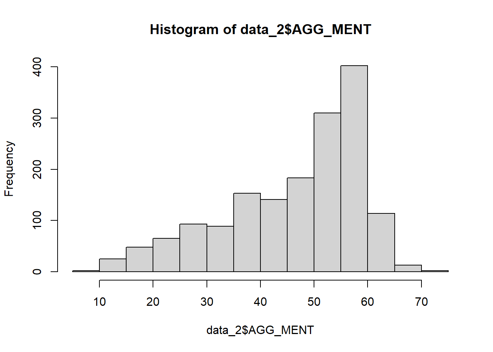
# Create qqplot for aggregate mental QOL score
qqnorm(data_2$AGG_MENT)
qqline(data_2$AGG_MENT)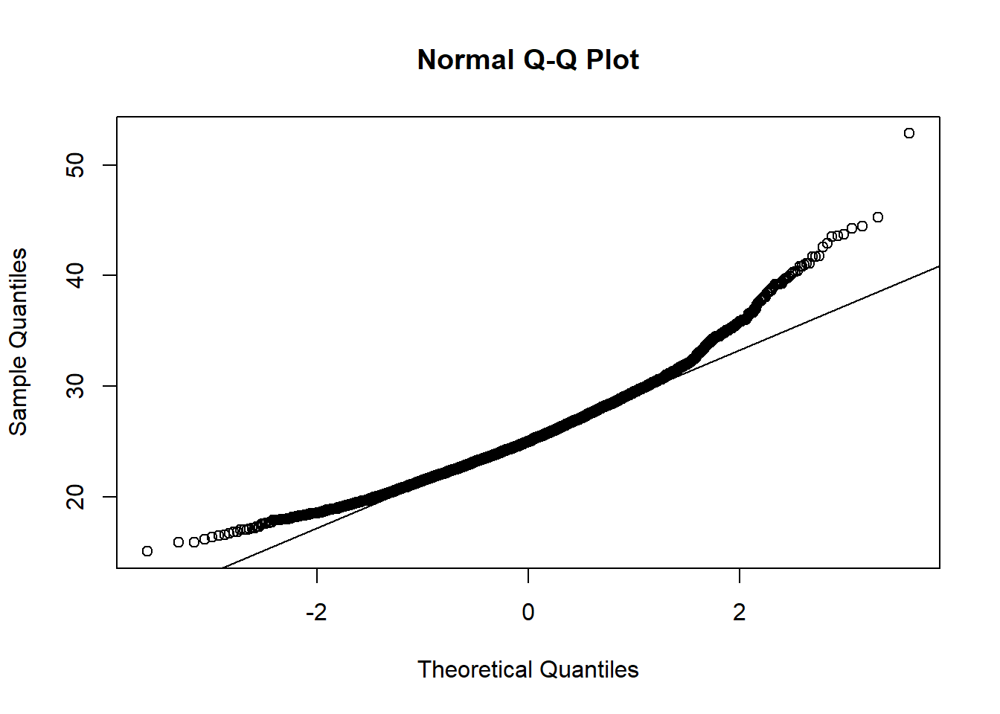
# Sort by descending to examine highest values
sorted_data_2 <- data_2[order(data_2$AGG_MENT),] %>%
select(newid, AGG_MENT, years)
# Pretty print resulting table
kable(head(sorted_data_2), format = "html") %>%
kable_styling(bootstrap_options = c("hover", "striped", "condensed"))| newid | AGG_MENT | years |
|---|---|---|
| 263 | 7.229315 | 0 |
| 368 | 9.851272 | 0 |
| 368 | 10.510143 | 2 |
| 499 | 10.891071 | 0 |
| 306 | 10.954260 | 0 |
| 309 | 11.206351 | 2 |
# Create boxplot of aggregate mental QOL to assess for outliers
outlier_AGG_MENT <- boxplot(data_2$AGG_MENT, main = "Boxplot for Aggregate Mental QOL")$out
text(x = rep(1.2, length(outlier_AGG_MENT)),
y = outlier_AGG_MENT, labels = outlier_AGG_MENT, col = 'red', cex = 0.8)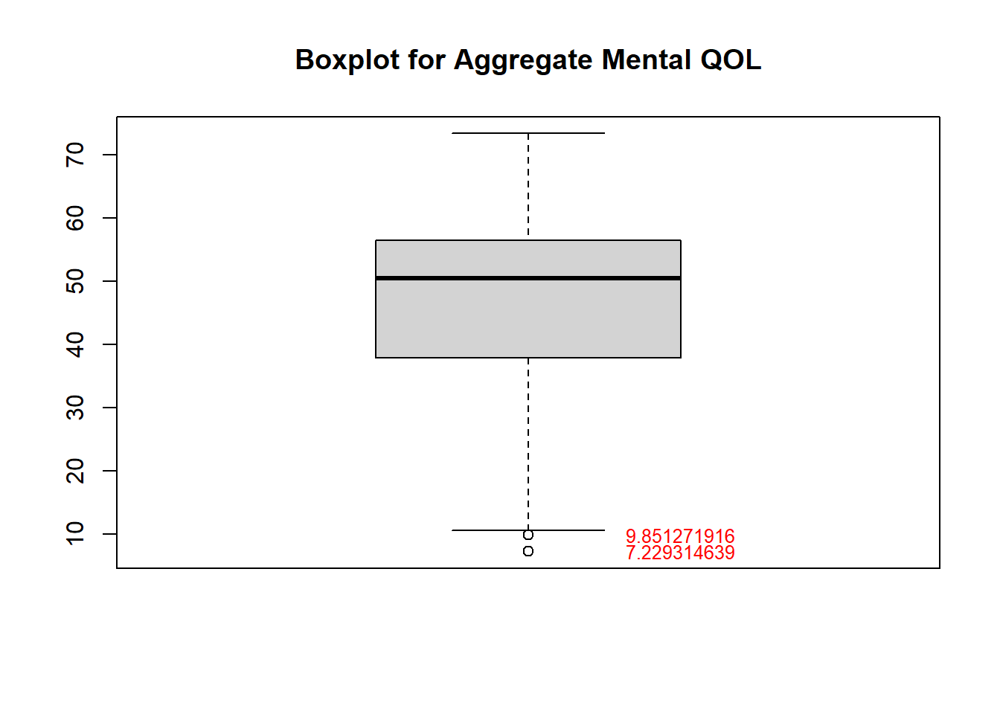
It appears that AGG_MENT only has 2 potential outliers, and is also not normally distributed, it is left-tailed. Let’s address that.
# Use bestNormalize function to test which transformation performs the best
BNobject <- bestNormalize(data_2$AGG_MENT)
BNobjectBest Normalizing transformation with 1640 Observations
Estimated Normality Statistics (Pearson P / df, lower => more normal):
- arcsinh(x): 9.7486
- Box-Cox: 3.3516
- Center+scale: 5.401
- Double Reversed Log_b(x+a): 2.4294
- Exp(x): 168.2179
- Log_b(x+a): 9.7603
- orderNorm (ORQ): 1.2083
- sqrt(x + a): 7.0751
- Yeo-Johnson: 3.2018
Estimation method: Out-of-sample via CV with 10 folds and 5 repeats
Based off these, bestNormalize chose:
orderNorm Transformation with 1640 nonmissing obs and ties
- 1641 unique values
- Original quantiles:
0% 25% 50% 75% 100%
7.229 37.863 50.386 56.401 73.312 The orderNorm transformation beats out the other transformations by a mile. Let’s perform that.
# Perform orderNorm transformation of aggregate mental QOL score
data_2$AGG_MENT_orderNorm <- orderNorm(data_2$AGG_MENT)$x.tWarning in orderNorm(data_2$AGG_MENT): Ties in data, Normal distribution not guaranteedMASS::truehist(data_2$AGG_MENT_orderNorm, main = "OrderNorm transformation", nbins = 24)
That appears to be what we have to do but I have some misgivings with orderNorm transforming everything…
Come back to this
AGG_PHYS has a min of 9.12 and a max of 73.57. These are within the specified range of 0 - 100, and it appears there were no data error entries.
# Creat histogram of aggregate physical QOL score
hist(data_2$AGG_PHYS)
# Create qqplots of aggregate physical QOL score
qqnorm(data_2$AGG_PHYS)
qqline(data_2$AGG_PHYS)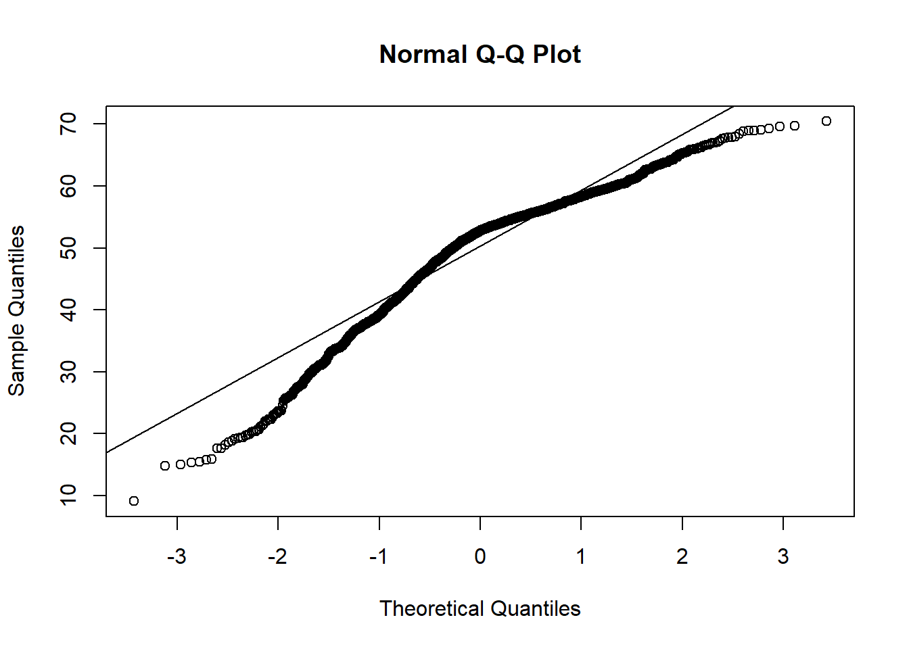
AGG_PHYS is not normally distributed, it is left-tailed.
Let’s test which type of transformation might suit it.
# Use bestNormalize function to test which transformation performs the best
BNobject <- bestNormalize(data_2$AGG_PHYS)
BNobjectBest Normalizing transformation with 1640 Observations
Estimated Normality Statistics (Pearson P / df, lower => more normal):
- arcsinh(x): 6.7041
- Box-Cox: 2.4795
- Center+scale: 3.8433
- Double Reversed Log_b(x+a): 1.8846
- Exp(x): 172.5129
- Log_b(x+a): 6.705
- orderNorm (ORQ): 1.1293
- sqrt(x + a): 5.0732
- Yeo-Johnson: 2.1124
Estimation method: Out-of-sample via CV with 10 folds and 5 repeats
Based off these, bestNormalize chose:
orderNorm Transformation with 1640 nonmissing obs and ties
- 1641 unique values
- Original quantiles:
0% 25% 50% 75% 100%
9.117 44.240 52.791 56.389 70.437 Again orderNorm performs the best.
# Perform orderNorm transformation of aggregate mental QOL score
data_2$AGG_PHYS_orderNorm <- orderNorm(data_2$AGG_PHYS)$x.tWarning in orderNorm(data_2$AGG_PHYS): Ties in data, Normal distribution not guaranteedMASS::truehist(data_2$AGG_PHYS_orderNorm, main = "OrderNorm transformation", nbins = 24)
OrderNorm transforming all our DVs might make interpration difficult…
Come back to this.
Cleaning Covariates
Now let’s perform data quality checks on our covariates.
Hash/marijuana use since last visit
- 1 = no
- 2 = yes
- blank = missing
# Create a barplot for hash use
barplot(table(data_2$HASHV))
Missing data is correctly handled for this variable.
We have more visits where participants used hash since the last visit than visits where participants did not use hash.
Frequency hash/marijuana was used since last visit.
- 0 = Never
- 1 = Daily
- 2 = Weekly
- 3 = Monthly
- 4 = Less Often
- Blank = Missing
# Create barplot for hash frequency
barplot(table(data_2$HASHF))
This variable is coded correctly. Most participants answered they have never used Hash.
Income
- 1 = Less than $10,000
- 2 = $10,000 - $19,999
- 3 = $20,000 - $29,999
- 4 = $30,000 - $39,999
- 5 = $40,000 - $49,999
- 6 = $50,000 - $59,999
- 7 = $60,000 or more
- 9 = Do not wish to answer
The min and max for income are 1 - 9, which matches that data dictionary.
# Create barplot for income
barplot(table(data_2$income))
# Get values for each income level
kable(table(data_2$income), format = "html") %>%
kable_styling(bootstrap_options = c("condensed", "hover", "striped"))| Var1 | Freq |
|---|---|
| Less than $10,000 | 285 |
| $10,000-$19,999 | 164 |
| $20,000-$29,999 | 175 |
| $30,000-$39,999 | 172 |
| $40,000-$49,999 | 123 |
| $50,000-$59,999 | 202 |
| $60,000 or more | 89 |
| Do not wish to answer | 38 |
We have to convert those values of ‘Do not wish to answer’ to be NA.
# Converting scores of 9 (do not wish to answer) to be NA
data$income[data_2$income == 9] <- NA
barplot(table(data_2$income))
Looks good, we just converted 38 participants from do not wish to answer, to count as missing.
Body Mass Index
We have a min of -1 and a max of 1000.
-1: Improbable values
999: Insufficient data (why it shows up with decimals and is not exactly 999, who knows).
# Create histogram of BMI
hist(data_2$BMI)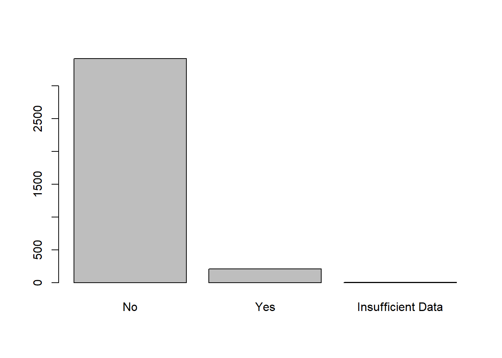
Let’s convert those values of -1 and >= 998 into missing values.
# Convert missing and improbably values to NA
data_2$BMI[data_2$BMI < 0 | data_2$BMI >= 998] <- NAAnd check out the histogram again and the qqplot.
# Create histogram of BMI
hist(data_2$BMI, breaks = 20)
# Create qqplot of BMI
qqnorm(data_2$BMI)
qqline(data_2$BMI)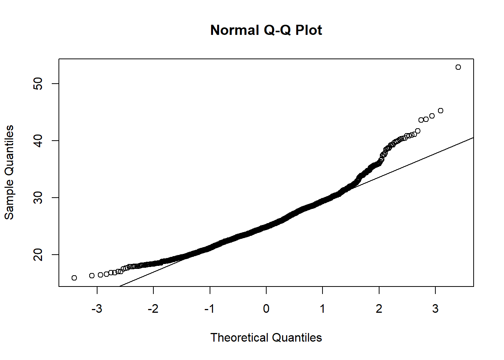
summarize_column(data_2$BMI) Type Min Max
1 Numeric 15.94907 52.832Looks better. Now we have a BMI range of 15.94 - 52.83.
The histogram and qqplots show BMI is slightly right skewed, with more morbidly obese patients than underweight. Is this close enough to normal to ignore, if we take out outliers?
The patient with a BMI of 52.83 may be an outlier based on the qqplot.
# Investigating highest BMI value to see if its an outlier
highest_bmi <- data[data$newid == 206,]
# Plot BMI for each year for this patient
plot(highest_bmi$years, highest_bmi$BMI)
Interestingly, participant 206 got heavier over the first year, then dropped weight in the proceeding years. Either that or that second year entry point was an error and was meant to be 42.83
# Testing to see if these plots look normal after taking the participant with BMI of 52.83 out
data_2$BMI[data_2$newid == 206 & data_2$years == 1] <- NA
hist(data_2$BMI, breaks = 20)
qqnorm(data_2$BMI)
qqline(data_2$BMI)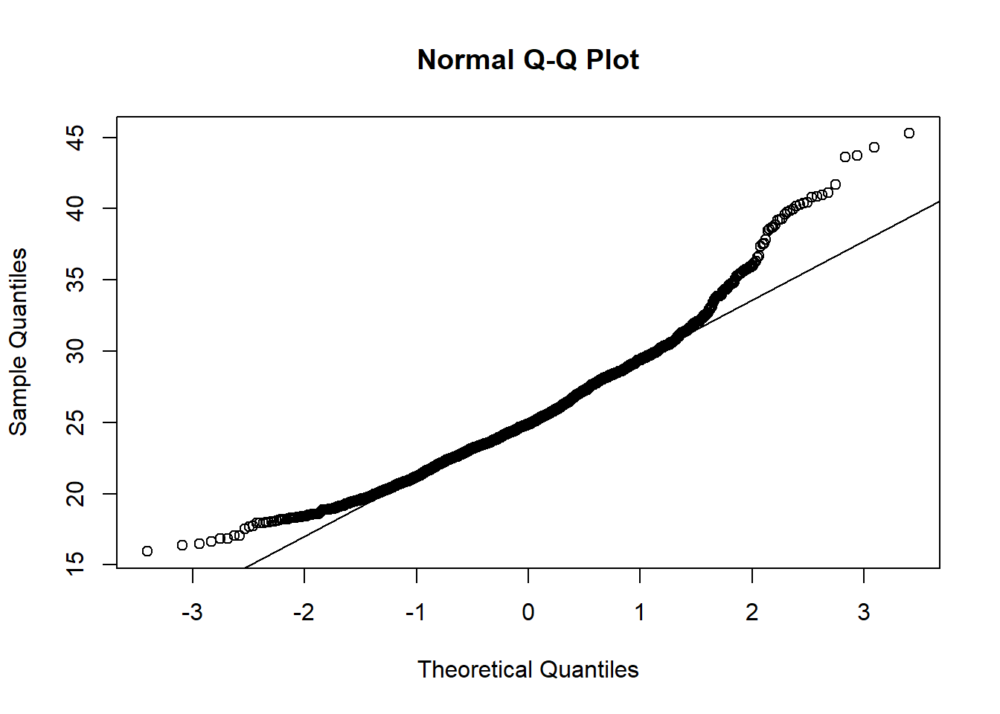
# Add back in that value we removed
data_2$BMI[data_2$newid == 206 & data_2$years == 1] <- 52.832After removing that highest BMI value, the histogram is still right tailed.
What do the boxplots look like?
outlier_bmi <- boxplot(data_2$BMI, main = "Boxplot for BMI")$out
text(x = rep(1.2, length(outlier_bmi)),
y = outlier_bmi, labels = outlier_bmi, col = 'red', cex = 0.8)
That’s a lot of potential outliers for BMI. If we really want to use this variable we may have to remove these values to keep BMI normally distributed.
# Run simple correlation matrix to see if BMI correlated with any outcomes of interest
# Correlation between VMI and VLOAD log
cor_test_result <- cor.test(data_2$BMI, data_2$VLOAD_log)
cor_test_result
Pearson's product-moment correlation
data: data_2$BMI and data_2$VLOAD_log
t = -5.8077, df = 1499, p-value = 7.721e-09
alternative hypothesis: true correlation is not equal to 0
95 percent confidence interval:
-0.1974585 -0.0984866
sample estimates:
cor
-0.148344 # Correlation between BMI and CD4+ T Cell count boxcox
cor_test_result <- cor.test(data_2$BMI, data_2$LEU3N_boxcox)
cor_test_result
Pearson's product-moment correlation
data: data_2$BMI and data_2$LEU3N_boxcox
t = 7.5505, df = 1503, p-value = 7.484e-14
alternative hypothesis: true correlation is not equal to 0
95 percent confidence interval:
0.1420089 0.2393834
sample estimates:
cor
0.1911664 # Correlation between BMI and mental QOL
cor_test_result <- cor.test(data_2$BMI, data_2$AGG_MENT)
cor_test_result
Pearson's product-moment correlation
data: data_2$BMI and data_2$AGG_MENT
t = 2.2657, df = 1504, p-value = 0.02361
alternative hypothesis: true correlation is not equal to 0
95 percent confidence interval:
0.007834005 0.108516221
sample estimates:
cor
0.05832342 # Correlation between BMI and physical QOL.
cor_test_result <- cor.test(data_2$BMI, data_2$AGG_PHYS)
cor_test_result
Pearson's product-moment correlation
data: data_2$BMI and data_2$AGG_PHYS
t = 4.4256, df = 1504, p-value = 1.031e-05
alternative hypothesis: true correlation is not equal to 0
95 percent confidence interval:
0.06323068 0.16296024
sample estimates:
cor
0.113381 BMI is correlated with all our outcome variables, so we should make sure it’s cleaned.
It looks like we have a lot of outliers for BMI we can clean out from our data set to make sure it has a normal distribution.
# Compute mean and sd values for BMI
mean_value <- mean(data_2$BMI, na.rm = TRUE)
sd_value <- sd(data_2$BMI, na.rm = TRUE)
# Use plotly to label outliers
fig <- plot_ly(data = data_2, type = 'box')
fig <- fig %>% add_boxplot(y = ~BMI, name = "Suspected Outlier",
boxpoints = 'suspectedoutliers',
marker = list(color = 'rgb(8,81,156)',
outliercolor = 'rgba(219, 64, 82, 0.6)',
line = list(outliercolor = 'rgba(219, 64, 82, 1.0)',
outlierwidth = 2)),
line = list(color = 'rgb(8,81,156)'),
text = ~paste("ID:", newid),
hoverinfo = "text")
figWarning: Ignoring 135 observations# Identify outliers
data_2$BMI_outlier <- (abs(data_2$BMI - mean_value) > 3* sd_value)
# See how many outliers we have
filtered_data <- data_2 %>%
select(newid, BMI, BMI_outlier) %>%
filter(BMI_outlier == "TRUE")
dim(filtered_data)[1] 22 3# Pretty Print
kable(head(filtered_data), format = "html") %>%
kable_styling(bootstrap_options = c("condensed", "hover", "striped"))| newid | BMI | BMI_outlier |
|---|---|---|
| 56 | 38.89617 | TRUE |
| 107 | 39.58391 | TRUE |
| 131 | 40.38171 | TRUE |
| 131 | 39.29654 | TRUE |
| 137 | 40.19738 | TRUE |
| 137 | 39.25950 | TRUE |
We have 22 patients that had a BMI +- 3 SD from the mean. Let’s clear them from the data set.
# Filter our values greater than 3SD from the mean.
data_2$BMI[(abs(data_2$BMI - mean_value) > 3* sd_value)] <- NA
# Create histogram of BMI now that we have removed outleirs
hist(data_2$BMI)
# Create qqplot of BMI now that we have removed outliers
qqnorm(data_2$BMI)
qqline(data_2$BMI)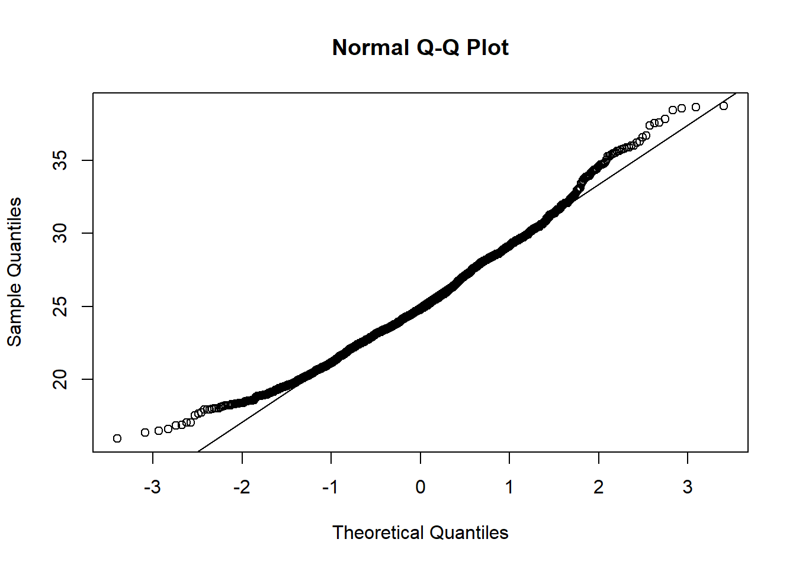
# Plot outliers one more time
fig <- plot_ly(data = data_2, type = 'box')
fig <- fig %>% add_boxplot(y = ~BMI, name = "Suspected Outlier",
boxpoints = 'suspectedoutliers',
marker = list(color = 'rgb(8,81,156)',
outliercolor = 'rgba(219, 64, 82, 0.6)',
line = list(outliercolor = 'rgba(219, 64, 82, 1.0)',
outlierwidth = 2)),
line = list(color = 'rgb(8,81,156)'),
text = ~paste("ID:", newid),
hoverinfo = "text")
figWarning: Ignoring 157 observationsThose all look a lot better! We can now conclude that BMI is normally distributed and can be used as a covariate in our models.
High Blood Pressure (SBP >= 140 or DBP >= 90 or (diagnosed with hypertension and use of medication)
- 1 = No
- 2 = Yes
- 3 = No, based on data trajectory
- 4 = Yes, based on data trajectory
- 9 = Insufficient data, may include reported treatment without diagnosis
- -1 = improbable value
We will have to exclude values of 9 or -1.
# Create barplot of high blood pressure
barplot(table(data_2$HBP))
# Get values for high blood pressure category
kable(table(data_2$HBP), format = "html") %>%
kable_styling(bootstrap_options = c("condensed", "hover", "striped"))| Var1 | Freq |
|---|---|
| No | 1109 |
| Yes | 366 |
| No, based on data trajectory | 34 |
| Yes, based on data trajectory | 4 |
| Insufficient data, may include reported treatment without diagnosis | 137 |
| Improbable Value | 0 |
There are 137 participants with insufficient data. Let’s purge them from the data set.
# Convert values of insufficient data to NA for high blood pressure
data_2$HBP[data_2$HBP == "Insufficient data, may include reported treatment without diagnosis"] <- NA
# Drop empty levels
data_2$HBP <- droplevels(data_2$HBP)
# Create barplot of high blood pressure
barplot(table(data_2$HBP))
# Pretty print table
kable(table(data_2$HBP), format = "html") %>%
kable_styling(bootstrap_options = c("condensed", "hover", "striped"))| Var1 | Freq |
|---|---|
| No | 1109 |
| Yes | 366 |
| No, based on data trajectory | 34 |
| Yes, based on data trajectory | 4 |
Looks better.
Only 34 visits where participants had no based on trajectory, and 4 that had yes based on trajectory.
We will have to decide to either exclude these or merge them into the no or yes groups, respectively. We can do that after we run our correlation matrix to see if there’s any relationship here worth pursuing.
Diabetes (GLUC 2 >= 126 or (diagnosed with diabetes and use of medication))
- 1 = No
- 2 = Yes
- 3 = No, based on data trajectory
- 4 = Yes, based on data trajectory
- 9 = Insufficient data
# Create barplot of diabetes
barplot(table(data_2$DIAB))
# Pretty print table
kable(table(data_2$DIAB), format = "html") %>%
kable_styling(bootstrap_options = c("condensed", "hover", "striped"))| Var1 | Freq |
|---|---|
| No | 628 |
| Yes | 65 |
| No, based on data trajectory | 76 |
| Yes, based on data trajectory | 0 |
| Insufficient data | 881 |
There are 881 visits with patient who had insuffiicent data to make a diabetes diagnosis!
Let’s change those values to NA.
# Convert values of insufficient data to NA for diabetes
data_2$DIAB[data_2$DIAB == "Insufficient data"] <- NA
# Drop empty levels
data_2$DIAB <- droplevels(data_2$DIAB)
# Create a barplot for diabetes
barplot(table(data_2$DIAB))
# Pretty print table
kable(table(data_2$DIAB), format = "html") %>%
kable_styling(bootstrap_options = c("condensed", "hover", "striped"))| Var1 | Freq |
|---|---|
| No | 628 |
| Yes | 65 |
| No, based on data trajectory | 76 |
Great, HBP is now cleaned.
Notably, there were no visits with a yes, based on trajectory.
Liver disease stage 3/4 (SGPT or SGOP > 150), preliminary algorithm
- 1 = No
- 2 = Yes
- 9 = Insufficient data
# Create barplot of liver disease stage
barplot(table(data_2$LIV34))
# Pretty print table
kable(table(data_2$LIV34), format = "html") %>%
kable_styling(bootstrap_options = c("condensed", "hover", "striped"))| Var1 | Freq |
|---|---|
| No | 1092 |
| Yes | 51 |
| Insufficient Data | 507 |
There are 507 patients with insufficient data for a liver disease diagnosis.
Let’s convert those values to NA to reflect this.
# Convert values of insufficient data to NA for liver disease stage
data_2$LIV34[data_2$LIV34 == "Insufficient Data"] <- NA
# Drop empty levels
data_2$LIV34 <- droplevels(data_2$LIV34)
# Create barplot of cleaned liver stage disease
barplot(table(data_2$LIV34))
# Pretty print table
kable(table(data_2$LIV34), format = "html") %>%
kable_styling(bootstrap_options = c("condensed", "hover", "striped"))| Var1 | Freq |
|---|---|
| No | 1092 |
| Yes | 51 |
Looks good, LIV34 is now cleaned!
Kidney disease (EGFR < 60 or UPRCR >= 200)
1 = No
2 = Yes
3 = No, based on data trajectory
4 = Yes, based on data trajectory
- 9 = Insufficient data
# Create barplots of kidney disease
barplot(table(data_2$KID))
# Pretty print table
kable(table(data_2$KID), format = "html") %>%
kable_styling(bootstrap_options = c("condensed", "hover", "striped"))| Var1 | Freq |
|---|---|
| No | 476 |
| Yes | 94 |
| No, based on data trajectory | 12 |
| Yes, based on data trajectory | 0 |
| Insufficient data | 1068 |
There are 1068 visits where there was insufficient data for a diagnosis.
Let’s convert those to NA values.
# Convert values of insufficient data to NA for kidney disease
data_2$KID[data_2$KID == "Insufficient data"] <- NA
# Drop empty levels
data_2$KID <- droplevels(data_2$KID)
# Create barplot of kidney disease
barplot(table(data_2$KID))
Looks good, KID is now cleaned!
Frailty Related Phenotype (3 out of 4 conditions = YES; WTLOS, PHDWA, HLTWB, HLTVA
- 1 = No
- 2 = Yes
- 9 = Insufficient data
# Create barplot of frailty related phenotype
barplot(table(data_2$FRP))
# Pretty print table
kable(table(data_2$FRP), format = "html") %>%
kable_styling(bootstrap_options = c("condensed", "hover", "striped"))| Var1 | Freq |
|---|---|
| No | 1555 |
| Yes | 92 |
| Insufficient Data | 3 |
Only 3 patients with insufficient data.
Let’s convert them to NA.
# Convert values of insufficient data to NA for frailty related phenotype
data_2$FRP[data_2$FRP == "Insufficient Data"] <- NA
# Drop empty levels
data_2$FRP <- droplevels(data_2$FRP)
# Create barplot of frailty related phenotype
barplot(table(data_2$FRP))
Looks good, FRP is now cleaned.
Frailty Phenotype (3 out of 5 conditions = YES: WTLOS, PHWDA, HLTVA, SLOW, WEAK)
- 1 = No
- 2 = Yes
- 9 = Insufficient Data
# Create barplot of frailty phenotype
barplot(table(data_2$FP))
# Pretty print table
kable(table(data_2$FP), format = "html") %>%
kable_styling(bootstrap_options = c("condensed", "hover", "striped"))| Var1 | Freq |
|---|---|
| No | 1195 |
| Yes | 98 |
| Insufficient Data | 357 |
357 visits with insufficient data. Let’s convert to NA.
# Convert values of insufficient data to NA for frailty phenotype
data_2$FP[data_2$FP == "Insufficient Data"] <- NA
# Drop empty levels
data_2$FP <- droplevels(data_2$FP)
# Create barplot of frailty phenotype
barplot(table(data_2$FP))
Looks good, FP is now cleaned!
Total cholesterol mg/dL
# Create histogram for total cholesterol
hist(data_2$TCHOL)
# Create qqplot for total cholesterol
qqnorm(data_2$TCHOL)
qqline(data_2$TCHOL)
The histogram and qq plot show what may be outliers for total cholesterol at the higher range. How many values are potential outliers?
# Create boxplot to assess for outliers for total cholesterol
outlier_tchol <- boxplot(data_2$TCHOL, main = "Boxplot for Total Cholesterol")$out
text(x = rep(1.2, length(outlier_tchol)),
y = outlier_tchol, labels = outlier_tchol, col = 'red', cex = 0.8)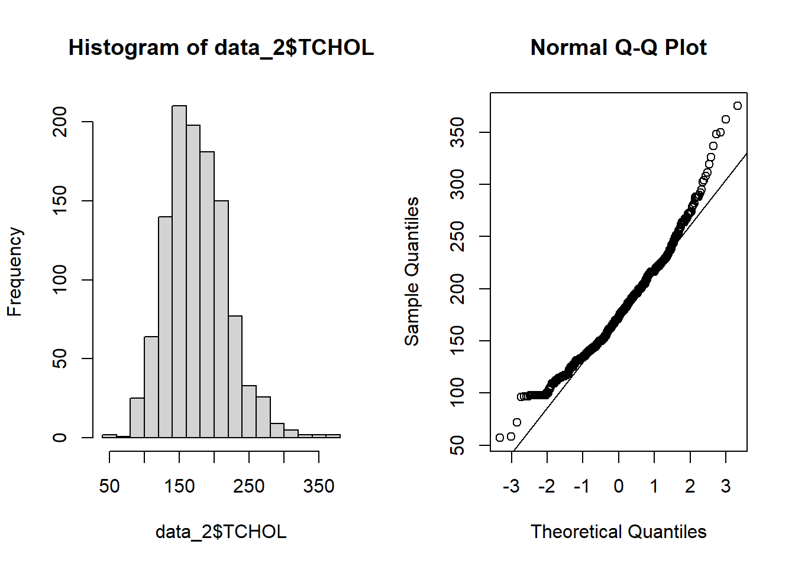
# Sort by descending total cholesterol
sorted_data <- data_2[order(-data_2$TCHOL),] %>%
select(newid, TCHOL, years)
# Pretty print table
kable(head(sorted_data), format = "html") %>%
kable_styling(bootstrap_options = c("condensed", "hover", "striped"))| newid | TCHOL | years |
|---|---|---|
| 199 | 613 | 2 |
| 89 | 375 | 2 |
| 428 | 362 | 2 |
| 433 | 350 | 2 |
| 418 | 348 | 1 |
| 203 | 337 | 1 |
The highest cholesterol value is ~2x higher than the next highest value. Let’s see what happens if we remove it.
# Delete highest total cholesterol value
data_2$TCHOL[data_2$TCHOL == 613] <- NA
# Create histogram of total cholesterol
hist(data_2$TCHOL)
# Create qqplot of total cholesterol
qqnorm(data_2$TCHOL)
qqline(data_2$TCHOL)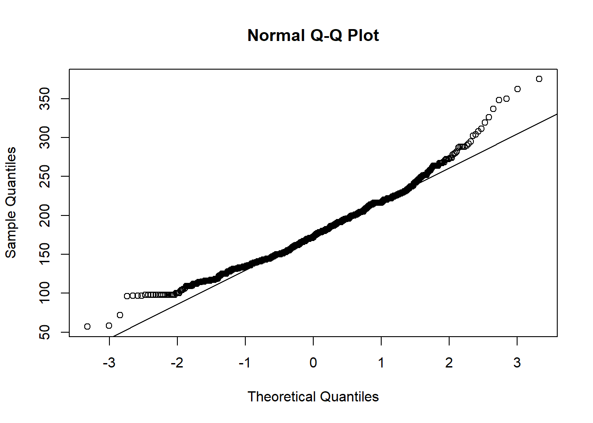
Looks better but still slightly right skewed. This variable had ~30% missing values, so we may end up not using it.
Triglycerides, mg/dL
# Create histogram of triglycerides
hist(data_2$TRIG)
# Create qqplot of triglycerides
qqnorm(data_2$TRIG)
qqline(data_2$TRIG)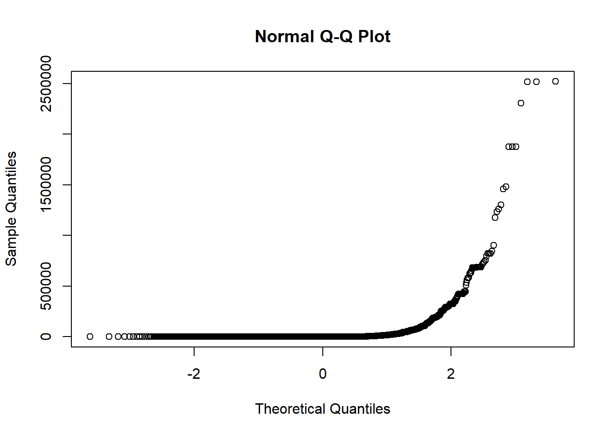
VERY skewed! Based on the qqplots, it looks like we would have to perform a log transform on TRIG if we wanted to use it. However we have nearly 50% missing values for this variable, so we should drop it as a covariate.
Low Density Lipoprotein (fasting) mg/dL
# Create a histogram for LDL
hist(data_2$LDL)
Looks like we may have an erroneous value at the highest range there.
# Sort by descending total cholesterol
sorted_data <- data_2[order(-data_2$LDL),] %>%
select(newid, LDL, years)
# Pretty print table
kable(head(sorted_data), format = "html") %>%
kable_styling(bootstrap_options = c("condensed", "hover", "striped"))| newid | LDL | years |
|---|---|---|
| 19 | 704 | 0 |
| 413 | 704 | 0 |
| 275 | 247 | 2 |
| 275 | 217 | 1 |
| 242 | 212 | 2 |
| 203 | 204 | 2 |
Patients 19 and 413 have the same value of 704 at baseline. Clearly an error with the measurement process.
LDL has close to 50% missing values and we will not be using it in our model, so I will move on. But good to know we can’t just blindly trust all the values to be correct!
Dyslipidemia at visit. fasting TC >=200 mg/dl or >=130 mg/dl or HDL < 40 mg/dl or triglycerides >=150 mg/dl or use of lipid lowering medications (HICHOLRX) with self report or clinical diagnosis in the past.
- 1 = No
- 2 = Yes
- 3 = No, based on data trajectory
- 4 = Yes from data trajectory
- 9 = Insufficient data
# Create barplot of dyslipidemia
barplot(table(data_2$DYSLIP))
# Pretty print table
kable(table(data_2$DYSLIP), format = "html") %>%
kable_styling(bootstrap_options = c("condensed", "hover", "striped"))| Var1 | Freq |
|---|---|
| No | 235 |
| Yes | 630 |
| No, based on data trajectory | 10 |
| Yes, based on data trajectory | 57 |
| Insufficient data | 718 |
There are 718 visits with insufficient data for a dyslipidemia diagnosis.
Let’s convert those to NAs to reflect this.
# Convert values of insufficient data to NA for dyslipidemia
data_2$DYSLIP[data_2$DYSLIP == "Insufficient data"] <- NA
# Drop empty levels
data_2$DYSLIP <- droplevels(data_2$DYSLIP)
# Create barplot of dyslipidemia
barplot(table(data_2$DYSLIP))
Looks good, DYSLIP is now cleaned!
Center for Epidemiological Studies Depression Scale ( >= 16 is depressed).
0 - 60
-1 = missing
# Create histogram for depression score
hist(data_2$CESD)
Let’s correctly reflect those -1’s as NA’s
# Remove depression scores that were coded as missing
data_2$CESD[data_2$CESD == -1] <- NA
# Create histogram of depression score
hist(data_2$CESD)
# Create qqplot for depression score
qqnorm(data_2$CESD)
qqline(data_2$CESD)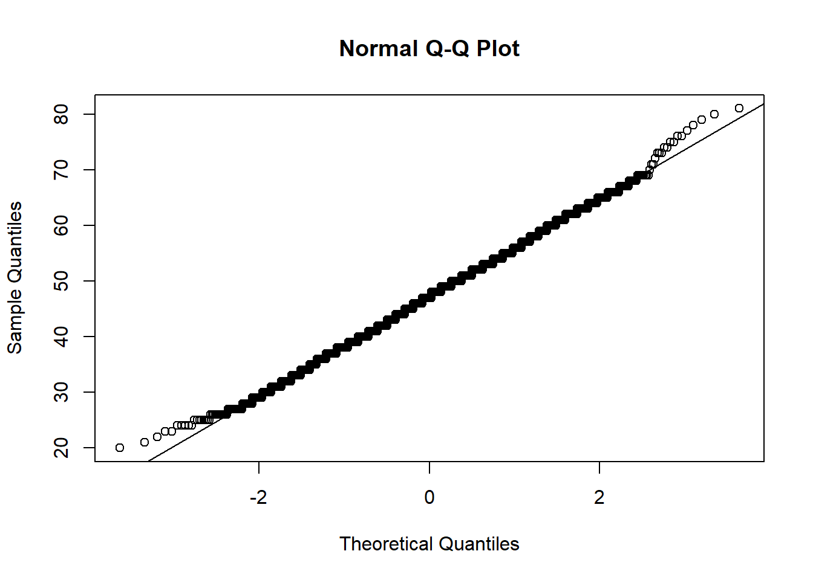
Looks good. CESD is now cleaned!
It IS right skewed though. Will have to handle that if we want to use it.
A square root transformation may be worth it?
# Try a sqrt transformation
data_2$CESD_sqrt <- sqrt(data_2$CESD)
# Create histogram of sqrt depression score
hist(data_2$CESD_sqrt)
# Create qqplot of sqrt depressions score
qqnorm(data_2$CESD_sqrt)
qqline(data_2$CESD_sqrt)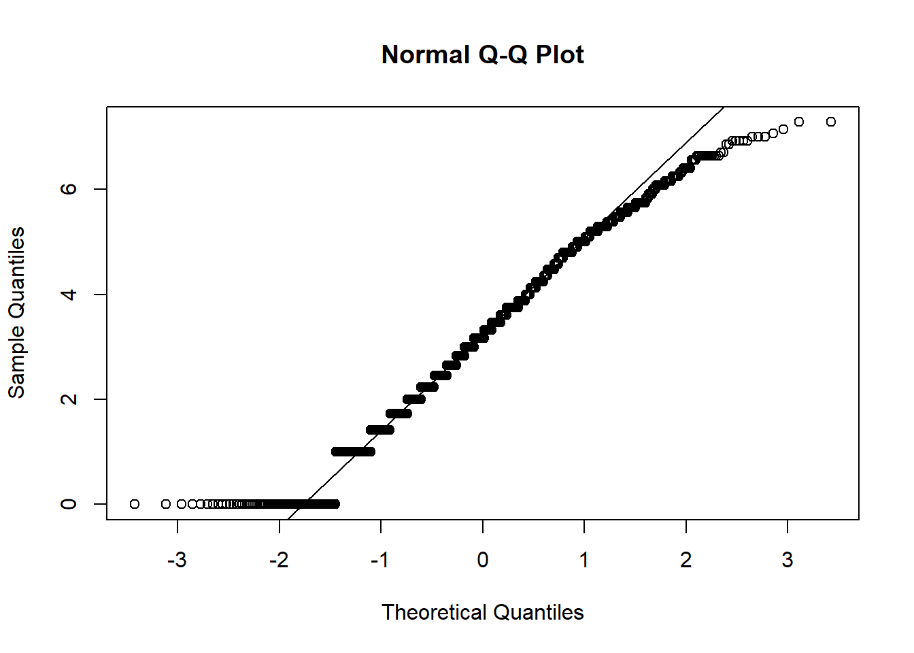
Smoking status
- 1 = Never smoked
- 2 = Former smoker
- 3 = Current smoker
- Blank = missing
# Create barplot of smoking status
barplot(table(data_2$SMOKE))
Looks good, nothing to do here.
Alcohol use since last visit
- 0 = None
- 1 = 1 to 3 drinks/week
- 2 = 4 to 13 drinks/week
- 3 = More than 13 drinks/week
- Blank = Missing
# Create barplot of drinking group
barplot(table(data_2$DKGRP))
Looks good, nothing to do here.
Took heroin or other opiates since last visit?
- 1 = No
- 2 = Yes
- -9 = Not specified in form
- Blank = Missing
# Create barplot of heroin or opiate use
barplot(table(data_2$HEROPIATE))
# Pretty print table
kable(table(data_2$HEROPIATE), format = "html") %>%
kable_styling(bootstrap_options = c("condensed", "hover", "striped"))| Var1 | Freq |
|---|---|
| No | 1552 |
| Yes | 66 |
| Not Specified | 20 |
Only 20 visits where participants did not specify drinking frequency on their form.
Let’s correct those to be NA.
# Convert values of insufficient data to NA for heroin or opiate use
data_2$HEROPIATE[data_2$HEROPIATE == "Not Specified"] <- NA
# Drop empty levels
data_2$HEROPIATE <- droplevels(data_2$HEROPIATE)
# Create barplot of heroin or opiate use
barplot(table(data_2$HEROPIATE))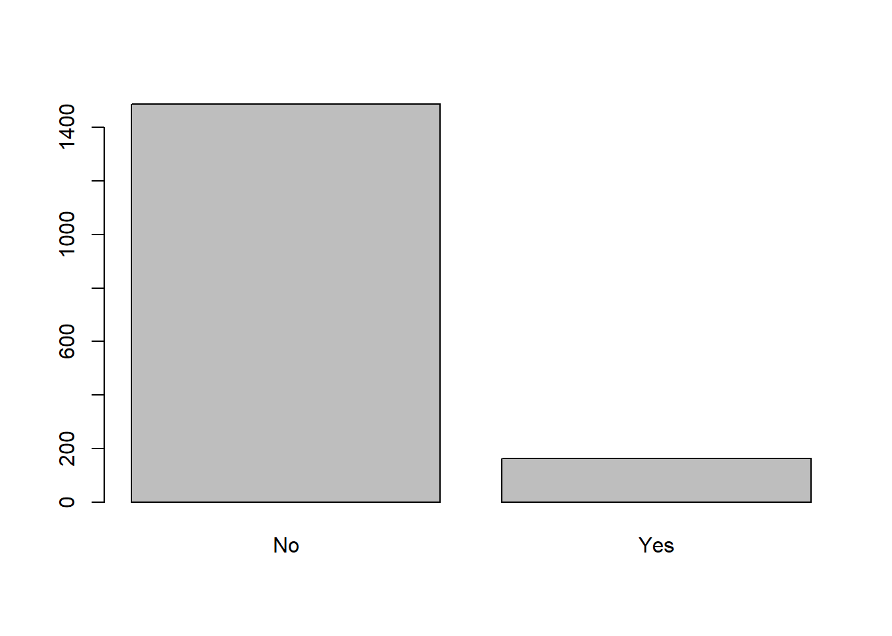
Looks good. HEROPIATE is now cleaned!
Took/used drugs with a needle since last visit?
- 1 = No
- 2 = Yes
- Blank = Missing
# Create barplot of intravenous drug use
barplot(table(data_2$IDU))
Looks good. Nothing to do here
Adherence to meds taken since last visit
- 1 = 100%
- 2 = 95-99%
- 3 = 75-94%
- 4 <75%
- Blank = Missing
# Create bar plot of adherence
barplot(table(data_2$ADH))
# Pretty print table
kable(table(data_2$ADH), format = "html") %>%
kable_styling(bootstrap_options = c("condensed", "hover", "striped"))| Var1 | Freq |
|---|---|
| 100% | 504 |
| 95-99% | 474 |
| 75-94% | 102 |
| <75% | 21 |
VERY interesting. I was thinking that 100% vs 95-99% adherence was an arbitrary difference to choose to divide groups on, and was actually planning to merge the two. However, this shows why the experimenters likely made that decision: both groups have close to the same amount of observations (~500)> That’s really good to know.
We could still play with the idea of simplifying this into two groups: >= 95% and < 95%. We will revisit that in the model selection.
Race
- 1 = White, non-Hispanic
- 2 = White, Hispanic
- 3 = Black, non-Hispanic
- 4 = Black, Hispanic
- 5 = American Indian or Alaskan Native
- 6 = Asian or Pacific Islander
- 7 = Other 8 = Other Hispanic (created for 2001-03 new recruits)
- Blank = Missing
# Create barplot of race
barplot(table(data_2$RACE))
# Pretty print table
kable(table(data_2$RACE), format = "html") %>%
kable_styling(bootstrap_options = c("condensed", "hover", "striped"))| Var1 | Freq |
|---|---|
| White, non-Hispanic | 1020 |
| White, Hispanic | 57 |
| Black, non-Hispanic | 474 |
| Black, Hispanic | 9 |
| American Indian or Alaskan Native | 0 |
| Asian or Pacific Islander | 0 |
| Other Hispanic | 18 |
This all looks coded properly. As is a common thing I am seeing, we have a predominant proportion of participants who are white, non-Hispanic. The data set might be large enough that we can use race as a covariate.
It might be worth dummy coding as white vs non white and see if there are any differences. That’s not the main focus of this project though so I will leave that to if I have extra time at the end.
Baseline or earliest reported education (highest grade or level)
- 1 = 8th grade or less
- 2 = 9,10, or 11th grade
- 3 = 12th grade
- 4 = At least one year college but no degree
- 5 = Four years college / got degree
- 6 = Some graduate work
- 7 = Post-graduate degree
- Blank = Missing
# Create barplot of education at baseline
barplot(table(data_2$EDUCBAS))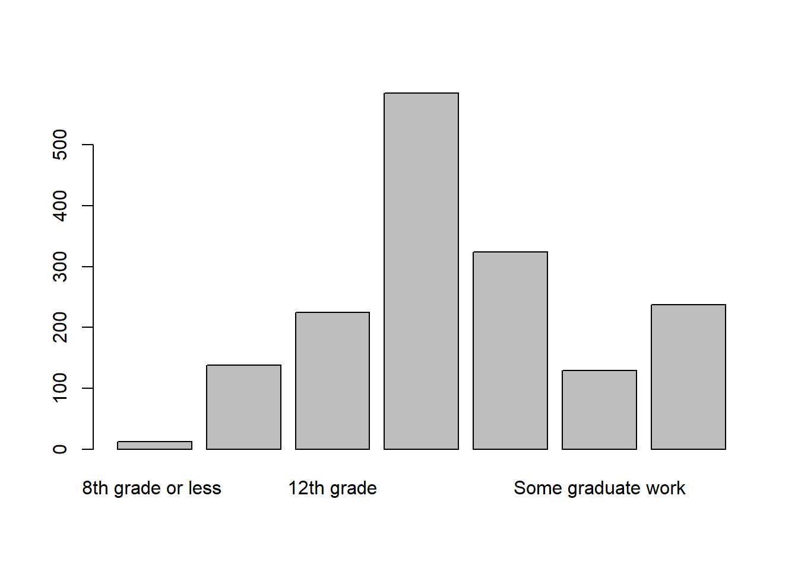
# Pretty print table
kable(table(data_2$EDUCBAS), format = "html") %>%
kable_styling(bootstrap_options = c("condensed", "hover", "striped"))| Var1 | Freq |
|---|---|
| 8th grade or less | 12 |
| 9,10, or 11th grade | 138 |
| 12th grade | 225 |
| At least one year college but no degree | 585 |
| Four years college / got degree | 324 |
| Some graduate work | 129 |
| Post-graduate degree | 237 |
This all checks out. And it looks like there are enough participants in each group (except for 8th grade or less) to run analyses with this variable. It will be interesting to see what relationships arise, as I expect there to be a strong association between education and HIV exposure.
HIV Serostatus
- 0 = Negative
- 1 = Positive
# Checking that all patients are HIV pos
any(is.na(data_2$hivpos))[1] FALSEAll patients in this data set are HIV+
Age at visit
# Create histogram for age
hist(data_2$age)
# Create qqplot for age
qqnorm(data_2$age)
qqline(data_2$age)
Nice and normally distributed, how we like it.
Take ART at visit
- 0 = NO
- 1 = YES
# Create barplot of antiretroviral therapy
barplot(table(data_2$ART))
# Pretty print table
kable(table(data_2$ART), format = "html") %>%
kable_styling(bootstrap_options = c("condensed", "hover", "striped"))| Var1 | Freq |
|---|---|
| 0 | 550 |
| 1 | 1100 |
I’m not too sure how useful this variable will be. It just means there were some visits where patients were not given ART, I suppose. But most visits had participants receiving ART.
Ever took ART.
- 0 = NO
- 1 = YES
# Create barplot of everART
barplot(table(data_2$everART))
# Pretty print table
kable(table(data_2$everART), format = "html") %>%
kable_styling(bootstrap_options = c("condensed", "hover", "striped"))| Var1 | Freq |
|---|---|
| 0 | 550 |
| 1 | 1100 |
This has the exact same split as ART. Which makes me think they are exactly the same values for each participant
# Check if everART and ART are identical
all(data_2$everART == data_2$ART)[1] TRUEYup, this is either an accidental duplicate of ART, or there is no distinction of significance between the two. What exactly does “Ever took ART” (the explanation provided by the data dictionary) mean? Was this taken at baseline?
Either way looks like we’re not using this variable.
Hard drug use (either injection drugs or illicit heroin/opiate use) since last visit
- 0 = No
- 1 = Yes
- Blank = Missing
# Create barplot of hard drug use category
barplot(table(data_2$hard_drugs))# Pretty print table
kable(table(data_2$hard_drugs), format = "html") %>%
kable_styling(bootstrap_options = c("condensed", "hover", "striped"))| Var1 | Freq |
|---|---|
| No | 1452 |
| Yes | 198 |
There were 198 visits where participants had used hard_drugs since the last visit.
This variable looks good. We will just have to do some dummy coding to create the categories the researchers were interested in.
For the CONSORT diagram, we just removed:
38 visits where patients did not report income.
X BMI values that were missing and y values that were improbable.
137 visits with insufficient data for a HBP diagnosis
881 visits with insufficient data for a DIAB diagnosis.
507 visits with insufficient data for a LIV34 diagnosis
1068 visits with insuffcient data for a kidney disease diagnosis
3 visits with insuffiient data for FRP diagnosis
357 visits with insufficient data for FP diagnosis
718 visits with insufficent data for dyslipidemia diagnosis
X visits with missing values for CESD
20 visits where heroin or opiate use was not specified
COME BACK TO THIS BECAUSE i THINK I NEED TO COME BACK AND DELETE OUTLIERS.
Missingness Redux
We first examined missingness before performing data cleaning just to get a sense of the data set.
Let’s compare what our missingness looked like pre- and post-data cleaning.
# Visualize missingness for pre-cleaned data
gg_miss_var(data)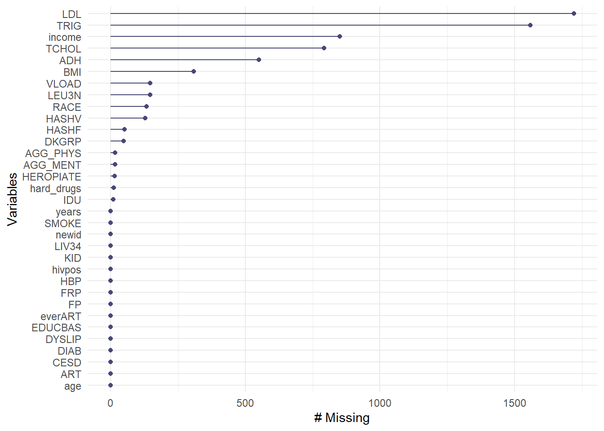
# Visualize missingness for post-cleaned data
gg_miss_var(data_2)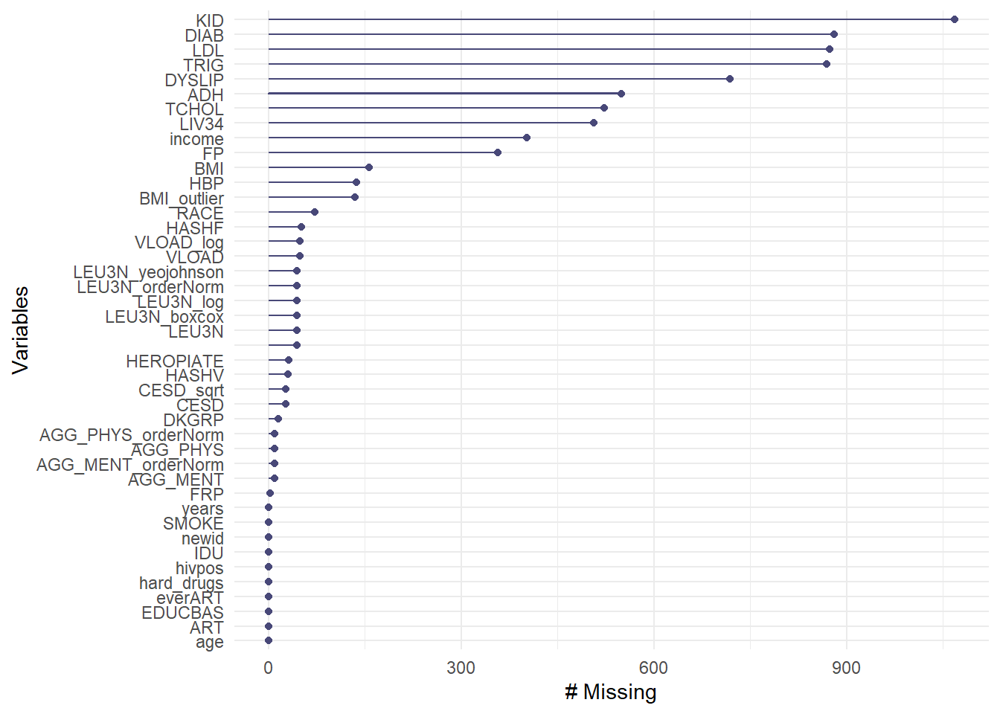
The order for missingness has changed, now with KID at the top, followed by DIAB, LDL, TRIG, and DYSLIP.
TCHOL, LIV34, and income are further behind, with levels of missingness that may be salvageable (~30%).
# Visualize missingness for pre-cleaned dataset
vis_miss(data)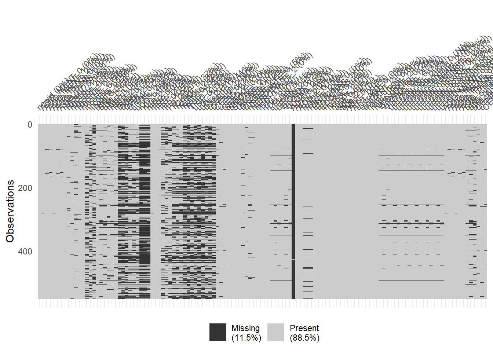
# Visualize missingness for post-cleaned dataset
vis_miss(data_2)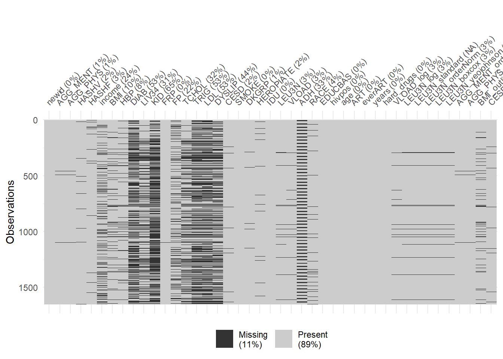
And for good measure let’s now examine missingness in the wide form data set.
# Create new wideform data set for first 2 years of study
data_wide_2 <- pivot_wider(data_2, id_cols = newid, names_from = years, values_from = -c(newid, years))
# Visualize missing values in the wideform data set
vis_miss(data_wide_2)There are no real trends that become apparent when looking at this plot for the wideform data set.
To summarize, it appears that diagnoses that were determined by algorithm (such as KID, DIAB, DYSLIP, and LIV34, often had insufficient data to make a diagnosis, so perhaps this is an issue with those algorithms. Additionally, lab measurements of LDL and TRIG seem to have been too onerous for participants to have gotten. Maybe they opted out of those tests, or maybe the tests were only ordered under certain circumstances.
These would be valuable questions to bring forth to the PI. But for now it appear as if we won’t be able to use these variables.
We may want to impute income, LIV34, and TCHOL, as these have missingness of 24%, 31%, and 32%, respectively.
Variables with minimal missing data (<5%) that can be disregarded without affecting analysis integrity
AGG_MENTAGG_PHYSHASH_VHASHFFRPSMOKEDKGRPHEROPIATEIDULEU3NVLOADADHEDUCBASEAGEARTyearshard-drugs
Variables with moderate missing data (5-20%) that necessitate intervention
BMIHBP
Variables with >20% missing data that are edge cases and may require exclusion or imputation
TCHOLincomeLIV34
Variables with an excess of missing data (>40%) that necessitate exclusion from the analysis
LDLTRIGDIABKIDDYSLIP
Variable Creation
Here we will create the variables necessary for the analysis.
Since we cleaned the longform data set, let’s go ahead and re-transpose it to update the wide form data set.
# Create new wideform data set for first 2 years of study
data_wide_2 <- pivot_wider(data_2, id_cols = newid, names_from = years, values_from = -c(newid, years))Change Scores
Here we will create our change scores for our dependent variables LEU3N, VLOAD, AGG_MENT, and AGG_PHYS to assess treatment response to ART. For VLOAD we will create change scores off the log transformed values.
# Create change scores for outcome variables
data_wide_2$VLOAD_log_CHANGE <- data_wide_2$VLOAD_log_2 - data_wide_2$VLOAD_log_0
data_wide_2$LEU3N_CHANGE <- data_wide_2$LEU3N_2 - data_wide_2$LEU3N_0
data_wide_2$AGG_MENT_CHANGE <- data_wide_2$AGG_MENT_2 - data_wide_2$AGG_MENT_0
data_wide_2$AGG_PHYS_CHANGE <- data_wide_2$AGG_PHYS_2 - data_wide_2$AGG_PHYS_0Now let’s perform internal consistency checks to make sure those calculation were performed correctly, as well as reexamine the distributions of the change score for each variable.
# Select only variables related to change scores to double check we performed calculation correctly.
filtered_data <- data_wide_2 %>%
select(VLOAD_log_0, VLOAD_log_2, VLOAD_log_CHANGE)
# Pretty print
kable(head(filtered_data), format = "html") %>%
kable_styling(bootstrap_options = c("condensed", "striped", "hover"))| VLOAD_log_0 | VLOAD_log_2 | VLOAD_log_CHANGE |
|---|---|---|
| 11.532856 | 4.094345 | -7.438511 |
| 9.002209 | 3.871201 | -5.131008 |
| 8.294439 | 3.314519 | -4.979919 |
| 6.606650 | 3.295837 | -3.310813 |
| 11.046548 | 6.039064 | -5.007484 |
| 9.664278 | 3.979682 | -5.684596 |
The computation for change score was performed correctly.
# Set up the plotting area: 1 row, 2 columns
par(mfrow = c(1, 2))
# Create hist for vload log change score
hist(data_wide_2$VLOAD_log_CHANGE)
# Create qqplot for vload log change score
qqnorm(data_wide_2$VLOAD_log_CHANGE)
qqline(data_wide_2$VLOAD_log_CHANGE)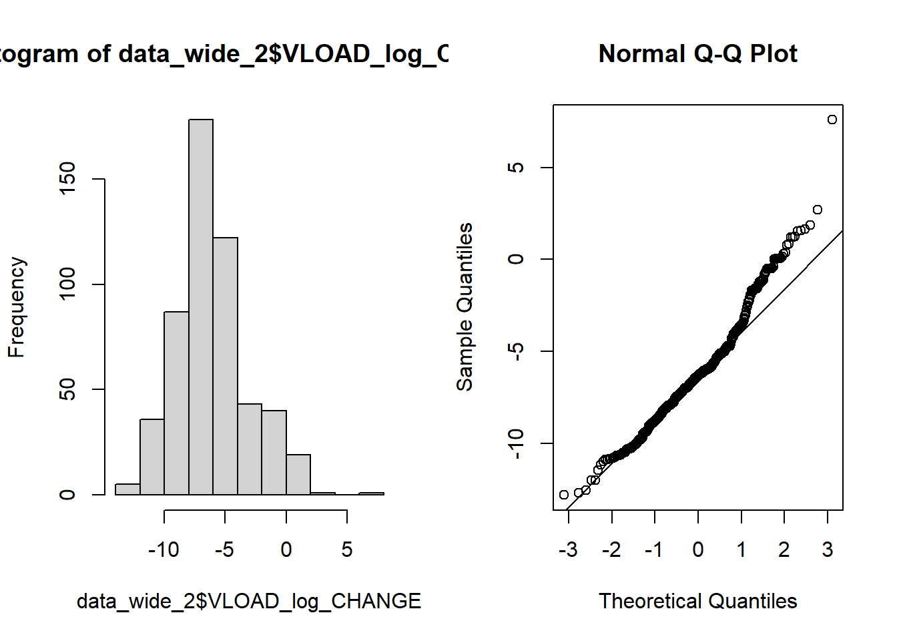
Looks like we have 1 outlier there that we should catch with the jackknife residuals after we fit the model, but VLOAD_log_CHANGE looks normally distributed!
# Select only variables related to change scores to double check we performed calculation correctly.
filtered_data <- data_wide_2 %>%
select(LEU3N_0, LEU3N_2, LEU3N_CHANGE)
# Pretty print
kable(head(filtered_data), format = "html") %>%
kable_styling(bootstrap_options = c("condensed", "striped", "hover"))| LEU3N_0 | LEU3N_2 | LEU3N_CHANGE |
|---|---|---|
| 104.1659 | 345.4010 | 241.23505 |
| 257.8278 | 263.0693 | 5.24147 |
| 563.1223 | 405.1816 | -157.94073 |
| 110.4218 | 179.6409 | 69.21912 |
| 252.6634 | 59.6219 | -193.04149 |
| 634.1246 | 893.4328 | 259.30816 |
The computation for change score was performed correctly.
# Set up the plotting area: 1 row, 2 columns
par(mfrow = c(1, 2))
# Create hist for CD4+ T Cell change score
hist(data_wide_2$LEU3N_CHANGE)
# Create qqplot for CD4+ T Cell change score
qqnorm(data_wide_2$LEU3N_CHANGE)
qqline(data_wide_2$LEU3N_CHANGE)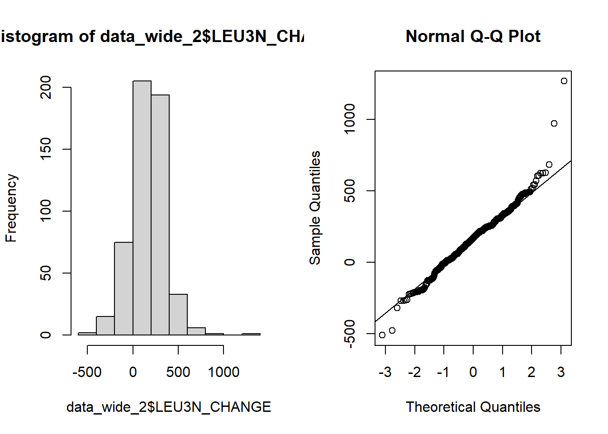
CD4+ T Cell count change score looks normally distributed, with 1 or 2 outliers that we can examine the leverage and influence of.
# Select only variables related to change scores to double check we performed calculation correctly.
filtered_data <- data_wide_2 %>%
select(AGG_MENT_0, AGG_MENT_2, AGG_MENT_CHANGE)
# Pretty print
kable(head(filtered_data), format = "html") %>%
kable_styling(bootstrap_options = c("condensed", "striped", "hover"))| AGG_MENT_0 | AGG_MENT_2 | AGG_MENT_CHANGE |
|---|---|---|
| 44.90710 | 59.65136 | 14.7442634 |
| 46.34190 | 45.41483 | -0.9270733 |
| 40.22337 | 41.70079 | 1.4774173 |
| 42.90638 | 52.68223 | 9.7758533 |
| 56.42904 | 66.50629 | 10.0772432 |
| 59.74437 | 50.26010 | -9.4842722 |
The computation for change score was performed correctly.
# Set up the plotting area: 1 row, 2 columns
par(mfrow = c(1, 2))
# Create hist for aggregate mental QOL change score
hist(data_wide_2$AGG_MENT_CHANGE, breaks = 24)
# Create qqplot for aggregate mental QOL change score
qqnorm(data_wide_2$AGG_MENT_CHANGE)
qqline(data_wide_2$AGG_MENT_CHANGE)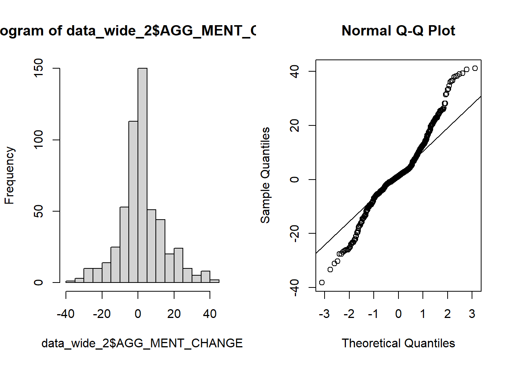
That looks more normally distributed now, and our sample size is very large so we can also count on the central limit theorem to help us with the assumption of normality.
# Select only variables related to change scores to double check we performed calculation correctly.
filtered_data <- data_wide_2 %>%
select(AGG_PHYS_0, AGG_PHYS_2, AGG_PHYS_CHANGE)
# Pretty print
kable(head(filtered_data), format = "html") %>%
kable_styling(bootstrap_options = c("condensed", "striped", "hover"))| AGG_PHYS_0 | AGG_PHYS_2 | AGG_PHYS_CHANGE |
|---|---|---|
| 52.52557 | 48.54453 | -3.9810371 |
| 27.92331 | 37.32204 | 9.3987247 |
| 60.06970 | 58.51450 | -1.5551943 |
| 50.78850 | 51.50533 | 0.7168277 |
| 43.75671 | 18.82350 | -24.9332115 |
| 56.86261 | 55.95668 | -0.9059311 |
The computation for change score was performed correctly.
# Set up the plotting area: 1 row, 2 columns
par(mfrow = c(1, 2))
# Create hist for aggregate physical QOL change score
hist(data_wide_2$AGG_PHYS_CHANGE, breaks = 24)
# Create qqplot for aggregate physical QOL change score
qqnorm(data_wide_2$AGG_PHYS_CHANGE)
qqline(data_wide_2$AGG_PHYS_CHANGE)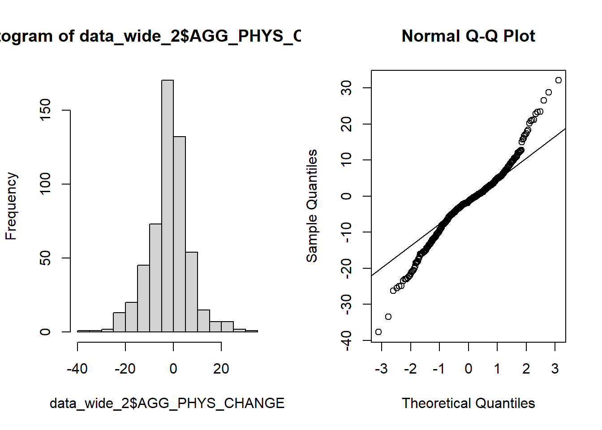
Aggregate physical QOL change score appears more normally distributed now.
After computing the change scores, our outcome variables are now normally distributed and we can move forward with using them in models!
Hard Drug Use Groups
We need to make dummy codes for our hard drug use groups.
The criteria outlined by the researchers are as follows:
- Never User: No drug use reported at 0, 1, or 2 years
- Previous User: Drug use reported at 0 or 1 years, but not 2 years
- Current User: Drug use reported at 2 years
First we will create dummy codes for whether a patient was a never, previous, or current hard drug user.
# Create dummy code for current drug users (those who used at year 2)
data_wide_2$current_drug <- ifelse(data_wide_2$hard_drugs_2 == "Yes", 1, 0)
# Create dummy code for previous drug users (those who used at years 0 or 1, but not 2)
data_wide_2$previous_drug <- ifelse((data_wide_2$hard_drugs_1 == "Yes" | data_wide_2$hard_drugs_0 == "Yes") & data_wide_2$hard_drugs_2 == "No", 1, 0)
# Create dummy code for never drug users (did not use at years 0, 1, or 2)
data_wide_2$never_drug <- ifelse(data_wide_2$hard_drugs_1 == "No" & data_wide_2$hard_drugs_0 == "No" & data_wide_2$hard_drugs_2 == "No", 1, 0)And perform some internal consistency checks to ensure we coded that correctly.
# Double check our criteria worked as intended
filtered_data <- data_wide_2 %>%
select(newid, hard_drugs_0, hard_drugs_1, hard_drugs_2, never_drug, previous_drug, current_drug)
# Pretty print
kable(head(filtered_data), format = "html") %>%
kable_styling(bootstrap_options = c("condensed", "striped", "hover"))| newid | hard_drugs_0 | hard_drugs_1 | hard_drugs_2 | never_drug | previous_drug | current_drug |
|---|---|---|---|---|---|---|
| 1 | Yes | No | No | 0 | 1 | 0 |
| 2 | Yes | No | No | 0 | 1 | 0 |
| 3 | Yes | Yes | Yes | 0 | 0 | 1 |
| 4 | Yes | Yes | No | 0 | 1 | 0 |
| 5 | Yes | Yes | Yes | 0 | 0 | 1 |
| 6 | No | No | Yes | 0 | 0 | 1 |
# Double check no overlapping group assignments (such as a current AND previous drug user)
no_overlap <- apply(data_wide_2[, c("never_drug", "previous_drug", "current_drug")], 1, sum) <= 1
all_no_overlap <- all(no_overlap)
# Print result
if (all_no_overlap) {
print("No overlapping group assignments")
} else {
print("There are overlapping group assignments in some rows")
}[1] "No overlapping group assignments"Great, that looks like we coded it properly and there are no overlaps between drug use conditions (e.g. there are no current drug users who are also previous drug users).
Now we will use those dummy codes to make a variable for which group each patient was in
- 0: Never User
- 1: Previous User
- 2: Current User
# Create a single variable for drug use group
data_wide_2$hard_drugs_grp <- ifelse(data_wide_2$never_drug == 1, 0,
ifelse(data_wide_2$previous_drug == 1, 1,
ifelse(data_wide_2$current_drug == 1, 2, NA)))
# Factor this new variable and label it too
data_wide_2$hard_drugs_grp <- factor(data_wide_2$hard_drugs_grp,
levels = c(0,1,2),
labels = c("Never User", "Previous User", "Current User"))And perform an internal consistency check to make sure there are no overlapping group assignments.
# Double check our criteria worked as intended
filtered_data <- data_wide_2 %>%
select(newid, hard_drugs_0, hard_drugs_1, hard_drugs_2, hard_drugs_grp)
# Pretty print
kable(head(filtered_data), format = "html") %>%
kable_styling(bootstrap_options = c("condensed", "striped", "hover"))| newid | hard_drugs_0 | hard_drugs_1 | hard_drugs_2 | hard_drugs_grp |
|---|---|---|---|---|
| 1 | Yes | No | No | Previous User |
| 2 | Yes | No | No | Previous User |
| 3 | Yes | Yes | Yes | Current User |
| 4 | Yes | Yes | No | Previous User |
| 5 | Yes | Yes | Yes | Current User |
| 6 | No | No | Yes | Current User |
Looks good, we can now move forward with analyses using the hard_drgs_grp variable!
Correlation Matrix
# # Have to filter down to only numeric variables here
#
#
# # Make a correlation matrix with all variables of the trimmed data set
# correlation_matrix <- cor(data_wide_2, use = "complete.obs")
#
# # Plot the matrix
# corrplot(correlation_matrix, method = "circle")
#
# # Trim the matrix
# correlation_matrix[upper.tri(correlation_matrix)] <- NA# Gets average viral load per patient for example, can do min and max etc.
summary_table <- data %>%
group_by(newid) %>%
summarize(mean_vload = mean(VLOAD))
summary_table# A tibble: 550 × 2
newid mean_vload
<dbl> <dbl>
1 1 25527.
2 2 1385.
3 3 759.
4 4 105.
5 5 10415.
6 6 7890.
7 7 11731.
8 8 108675.
9 9 2309.
10 10 495778.
# ℹ 540 more rowscolnames(data) [1] "newid" "AGG_MENT" "AGG_PHYS" "HASHV" "HASHF"
[6] "income" "BMI" "HBP" "DIAB" "LIV34"
[11] "KID" "FRP" "FP" "TCHOL" "TRIG"
[16] "LDL" "DYSLIP" "CESD" "SMOKE" "DKGRP"
[21] "HEROPIATE" "IDU" "LEU3N" "VLOAD" "ADH"
[26] "RACE" "EDUCBAS" "hivpos" "age" "ART"
[31] "everART" "years" "hard_drugs"# Create boxplots for vload_log by hard_drugs
# _______come back to this and add multiple plots for each outcome variable in a single plot____________
fig <- plot_ly(ggplot2::diamonds, y = ~data_2$VLOAD_log, color = ~data_2$hard_drugs, type = "box")
figWarning: Ignoring 49 observationsWarning in RColorBrewer::brewer.pal(N, "Set2"): minimal value for n is 3, returning requested palette with 3 different levels
Warning in RColorBrewer::brewer.pal(N, "Set2"): minimal value for n is 3, returning requested palette with 3 different levels# Create boxplots for vload_log by hard_drugs
fig <- plot_ly(data_wide_2, x = ~hard_drugs_grp, y = ~VLOAD_log_CHANGE, color = ~hard_drugs_grp, type = "box")
figWarning: Ignoring 18 observationsTo do
- Go back and add title and axes labels to all your plots dude
- add #greentext to every chunk
- organize tabs by outcome variable / covariates
- investigate these to analyze non normal data: quantile regression, best normalized r package, gamma link GLM
“The transformations contained in this package and implemented in bestNormalize are reversible (i.e., 1-1), which allows for straight-forward interpretation and consistency. In other words, any analysis performed on the normalized data can be interpreted using the original unit (see application).” Cool.
library(mice)
Attaching package: 'mice'The following object is masked from 'package:stats':
filterThe following objects are masked from 'package:base':
cbind, rbindimputed_data <- mice(mtcars, m = 5, method = 'pmm', maxit = 50, seed = 500)
iter imp variable
1 1
1 2
1 3
1 4
1 5
2 1
2 2
2 3
2 4
2 5
3 1
3 2
3 3
3 4
3 5
4 1
4 2
4 3
4 4
4 5
5 1
5 2
5 3
5 4
5 5
6 1
6 2
6 3
6 4
6 5
7 1
7 2
7 3
7 4
7 5
8 1
8 2
8 3
8 4
8 5
9 1
9 2
9 3
9 4
9 5
10 1
10 2
10 3
10 4
10 5
11 1
11 2
11 3
11 4
11 5
12 1
12 2
12 3
12 4
12 5
13 1
13 2
13 3
13 4
13 5
14 1
14 2
14 3
14 4
14 5
15 1
15 2
15 3
15 4
15 5
16 1
16 2
16 3
16 4
16 5
17 1
17 2
17 3
17 4
17 5
18 1
18 2
18 3
18 4
18 5
19 1
19 2
19 3
19 4
19 5
20 1
20 2
20 3
20 4
20 5
21 1
21 2
21 3
21 4
21 5
22 1
22 2
22 3
22 4
22 5
23 1
23 2
23 3
23 4
23 5
24 1
24 2
24 3
24 4
24 5
25 1
25 2
25 3
25 4
25 5
26 1
26 2
26 3
26 4
26 5
27 1
27 2
27 3
27 4
27 5
28 1
28 2
28 3
28 4
28 5
29 1
29 2
29 3
29 4
29 5
30 1
30 2
30 3
30 4
30 5
31 1
31 2
31 3
31 4
31 5
32 1
32 2
32 3
32 4
32 5
33 1
33 2
33 3
33 4
33 5
34 1
34 2
34 3
34 4
34 5
35 1
35 2
35 3
35 4
35 5
36 1
36 2
36 3
36 4
36 5
37 1
37 2
37 3
37 4
37 5
38 1
38 2
38 3
38 4
38 5
39 1
39 2
39 3
39 4
39 5
40 1
40 2
40 3
40 4
40 5
41 1
41 2
41 3
41 4
41 5
42 1
42 2
42 3
42 4
42 5
43 1
43 2
43 3
43 4
43 5
44 1
44 2
44 3
44 4
44 5
45 1
45 2
45 3
45 4
45 5
46 1
46 2
46 3
46 4
46 5
47 1
47 2
47 3
47 4
47 5
48 1
48 2
48 3
48 4
48 5
49 1
49 2
49 3
49 4
49 5
50 1
50 2
50 3
50 4
50 5# Check the imputed data
summary(imputed_data)Class: mids
Number of multiple imputations: 5
Imputation methods:
mpg cyl disp hp drat wt qsec vs am gear carb
"" "" "" "" "" "" "" "" "" "" ""
PredictorMatrix:
mpg cyl disp hp drat wt qsec vs am gear carb
mpg 0 1 1 1 1 1 1 1 1 1 1
cyl 1 0 1 1 1 1 1 1 1 1 1
disp 1 1 0 1 1 1 1 1 1 1 1
hp 1 1 1 0 1 1 1 1 1 1 1
drat 1 1 1 1 0 1 1 1 1 1 1
wt 1 1 1 1 1 0 1 1 1 1 1complete_data <- complete(imputed_data, 1) # 1 refers to the first imputed dataset
complete_data mpg cyl disp hp drat wt qsec vs am gear carb
Mazda RX4 21.0 6 160.0 110 3.90 2.620 16.46 0 1 4 4
Mazda RX4 Wag 21.0 6 160.0 110 3.90 2.875 17.02 0 1 4 4
Datsun 710 22.8 4 108.0 93 3.85 2.320 18.61 1 1 4 1
Hornet 4 Drive 21.4 6 258.0 110 3.08 3.215 19.44 1 0 3 1
Hornet Sportabout 18.7 8 360.0 175 3.15 3.440 17.02 0 0 3 2
Valiant 18.1 6 225.0 105 2.76 3.460 20.22 1 0 3 1
Duster 360 14.3 8 360.0 245 3.21 3.570 15.84 0 0 3 4
Merc 240D 24.4 4 146.7 62 3.69 3.190 20.00 1 0 4 2
Merc 230 22.8 4 140.8 95 3.92 3.150 22.90 1 0 4 2
Merc 280 19.2 6 167.6 123 3.92 3.440 18.30 1 0 4 4
Merc 280C 17.8 6 167.6 123 3.92 3.440 18.90 1 0 4 4
Merc 450SE 16.4 8 275.8 180 3.07 4.070 17.40 0 0 3 3
Merc 450SL 17.3 8 275.8 180 3.07 3.730 17.60 0 0 3 3
Merc 450SLC 15.2 8 275.8 180 3.07 3.780 18.00 0 0 3 3
Cadillac Fleetwood 10.4 8 472.0 205 2.93 5.250 17.98 0 0 3 4
Lincoln Continental 10.4 8 460.0 215 3.00 5.424 17.82 0 0 3 4
Chrysler Imperial 14.7 8 440.0 230 3.23 5.345 17.42 0 0 3 4
Fiat 128 32.4 4 78.7 66 4.08 2.200 19.47 1 1 4 1
Honda Civic 30.4 4 75.7 52 4.93 1.615 18.52 1 1 4 2
Toyota Corolla 33.9 4 71.1 65 4.22 1.835 19.90 1 1 4 1
Toyota Corona 21.5 4 120.1 97 3.70 2.465 20.01 1 0 3 1
Dodge Challenger 15.5 8 318.0 150 2.76 3.520 16.87 0 0 3 2
AMC Javelin 15.2 8 304.0 150 3.15 3.435 17.30 0 0 3 2
Camaro Z28 13.3 8 350.0 245 3.73 3.840 15.41 0 0 3 4
Pontiac Firebird 19.2 8 400.0 175 3.08 3.845 17.05 0 0 3 2
Fiat X1-9 27.3 4 79.0 66 4.08 1.935 18.90 1 1 4 1
Porsche 914-2 26.0 4 120.3 91 4.43 2.140 16.70 0 1 5 2
Lotus Europa 30.4 4 95.1 113 3.77 1.513 16.90 1 1 5 2
Ford Pantera L 15.8 8 351.0 264 4.22 3.170 14.50 0 1 5 4
Ferrari Dino 19.7 6 145.0 175 3.62 2.770 15.50 0 1 5 6
Maserati Bora 15.0 8 301.0 335 3.54 3.570 14.60 0 1 5 8
Volvo 142E 21.4 4 121.0 109 4.11 2.780 18.60 1 1 4 2maybe do MI for TCHOl, or try clearing out outliers +- 3 SD from mean and re-plot hist and qqplots
turn my kable pretty print into a function that I can just call as pretty(df)